Spring Boot学习
官网：https://spring.io/projects/spring-boot#overview
文档：https://docs.spring.io/spring-boot/docs/2.2.6.RELEASE/reference/html/
第一个Spring Boot 程序方式一：在线生成后导入分析一下项目目录添加自己的代码打包项目为jar包方式二：通过IDEA新建更改访问端口更改启动的banner原理初探pom.xml中的自动配置1. 父工程2. 启动器3. 主程序4. 结论5. SpringApplication.run()Spring Boot配置配置文件yaml概述yaml基础语法通过@Value注解来注入值通过.yml配置文件来注入值加载指定的配置文件.yml中配置占位符对比小结结论JSR303数据校验不同位置配置文件的优先级配置多环境切换Spring Boot Web开发静态资源映射规则（一）什么是webjars静态资源映射规则（二）首页如何定制模板引擎Thymeleaf语法MVC自动配置原理员工管理系统准备工作定制首页页面国际化配置通过点击按钮切换语言登录登录拦截展示员工列表增加员工修改员工信息删除员工注销配置404页面整合JDBCSpring Data简介整合JDBCJDBCTemplate整合Druid配置数据源配置Druid数据源监控配置 Druid web 监控 filter 过滤器整合MyBatis配置数据源整合MyBatisSpring Security认识SpringSecurity测试环境搭建认证和授权注销及权限控制根据认证状态，修改导航栏根据用户拥有的不同角色，显示不同的页面记住我定制首页附配置类完整代码Spring Boot整合Shiro环境搭建登录拦截用户认证【补充】安装Easy Code插件整合MyBatis请求授权shiro整合thymeleafSpring Boot整合SwaggerSwagger介绍整合SwaggerSwagger的配置Swagger的测试功能
第一个Spring Boot 程序
方式一：在线生成后导入
- 打开网站：https://start.spring.io/
- 按下图填写信息（基本上是保持默认）

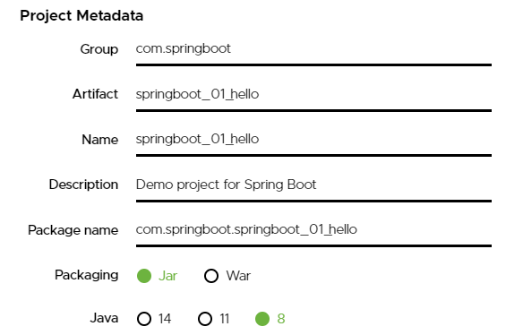

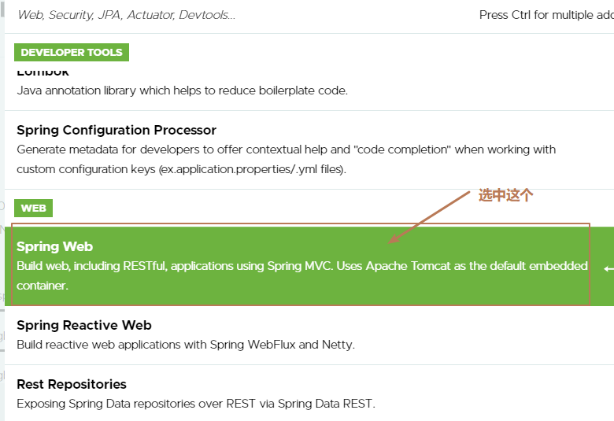
- 点击生成后会提示下载，选择下载位置后，点击保存即可下载
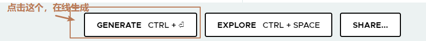
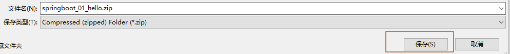
- 下载完成后解压到当前目录
- 打开IDEA，导入解压后的文件，然后等待一段时间自动下载一些依赖


- 点击ok后，按下图进行勾选
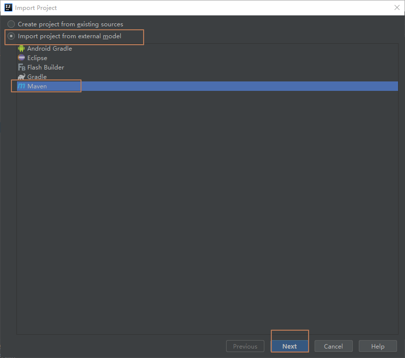


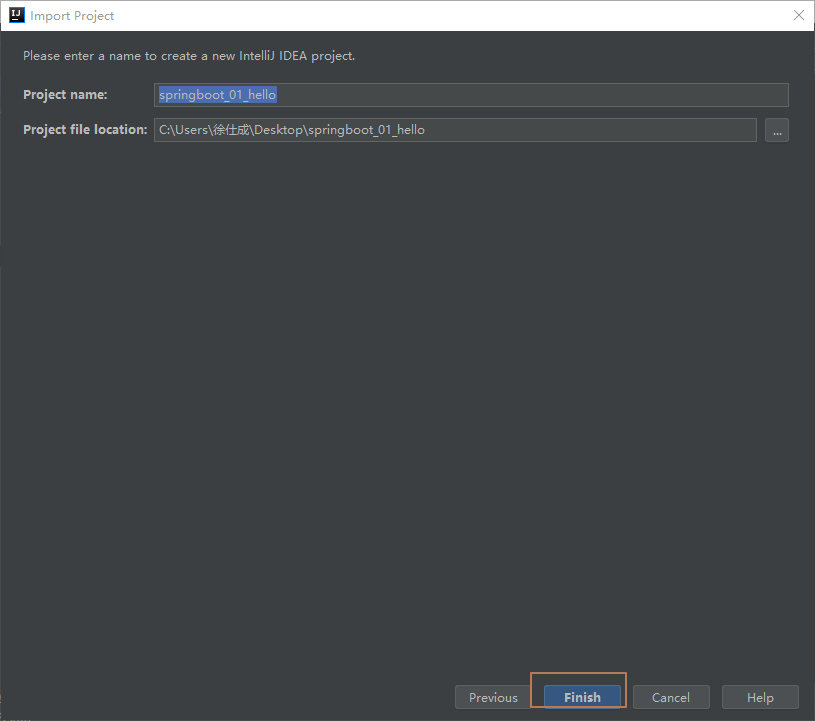
- 完成后，可以看到默认的项目目录结构
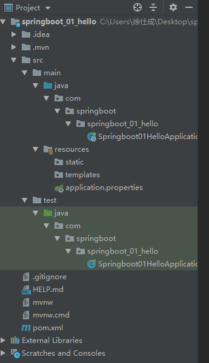
- 可以删掉下图红框选中的几个，目录可以看得更清楚


- 点击下图的运行按钮即可启动项目

- 控制台会输出下图
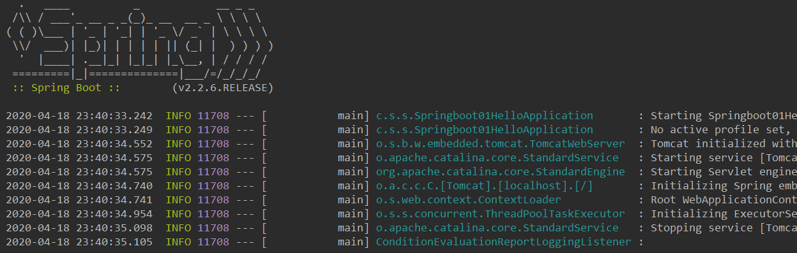
- 在浏览器中输入：localhost:8080,回车，即可看到下图，表示项目启动成功。（只是现在还没有写任何代码，默认显示error页面。）
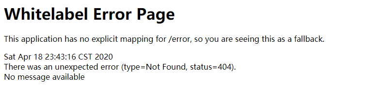
分析一下项目目录
通过上面步骤完成了基础项目的创建。就会自动生成以下文件。
- 程序的主启动类：
Springboot01HelloApplication.java - 一个
application.properties配置文件：SpringBoot的核心配置文件 - 一个 测试类：
Springboot01HelloApplicationTests.java - 一个
pom.xml
- 程序的主启动类：
看一下pom.xml中默认生成的依赖
x1 2<project xmlns="http://maven.apache.org/POM/4.0.0" xmlns:xsi="http://www.w3.org/2001/XMLSchema-instance"3 xsi:schemaLocation="http://maven.apache.org/POM/4.0.0 https://maven.apache.org/xsd/maven-4.0.0.xsd">4 <modelVersion>4.0.0</modelVersion>5 <!--父依赖-->6 <parent>7 <groupId>org.springframework.boot</groupId>8 <artifactId>spring-boot-starter-parent</artifactId>9 <version>2.2.6.RELEASE</version>10 <relativePath/> <!-- lookup parent from repository -->11 </parent>12 <groupId>com.springboot</groupId>13 <artifactId>springboot_01_hello</artifactId>14 <version>0.0.1-SNAPSHOT</version>15 <name>springboot_01_hello</name>16 <description>Demo project for Spring Boot</description>1718 <properties>19 <java.version>1.8</java.version>20 </properties>2122 <dependencies>23 <!--web依赖-->24 <dependency>25 <groupId>org.springframework.boot</groupId>26 <artifactId>spring-boot-starter-web</artifactId>27 </dependency>2829 <!--单元测试-->30 <dependency>31 <groupId>org.springframework.boot</groupId>32 <artifactId>spring-boot-starter-test</artifactId>33 <scope>test</scope>34 <exclusions>35 <exclusion>36 <groupId>org.junit.vintage</groupId>37 <artifactId>junit-vintage-engine</artifactId>38 </exclusion>39 </exclusions>40 </dependency>41 </dependencies>4243 <!--打包(jar包)插件-->44 <build>45 <plugins>46 <plugin>47 <groupId>org.springframework.boot</groupId>48 <artifactId>spring-boot-maven-plugin</artifactId>49 </plugin>50 </plugins>51 </build>5253</project>添加自己的代码
再建包时必须要与程序的主启动类
Springboot01HelloApplication.java的在同一级目录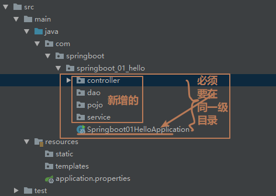
- 在controller包下新建一个
HelloController.java，代码如下：
xxxxxxxxxx81public class HelloController {34 ("/hello")5 public String hello(){6 return "Hello World!";7 }8}- 再点击运行按钮

- 打开浏览器，访问：http://localhost:8080/hello，显示：
- 成功了！完成！
打包项目为jar包
- 打开侧边的Maven，双击package。

- maven环境没有错的话会显示BUILD SUCCESS，构建成功。

- 在项目的target目录下可以看到
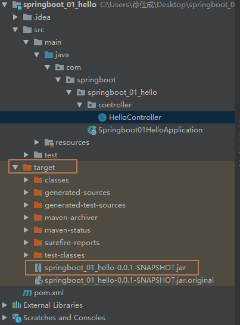
- 在项目的target目录的位置打开命令行工具（按住shift键，再点击鼠标右键）

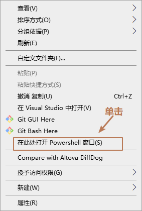
- 输入命令：
java -jar .\springboot_01_hello-0.0.1-SNAPSHOT.jar（输入java -jar spri后按tab键会自动补全），回车。

- jar包运行成功，在浏览器输入：http://localhost:8080/hello，效果一样。
方式二：通过IDEA新建
- 打开idea，新建工程

- 选择Spring Initializr，点击next。

- 按下图操作，更改一些默认内容

- 添加web依赖
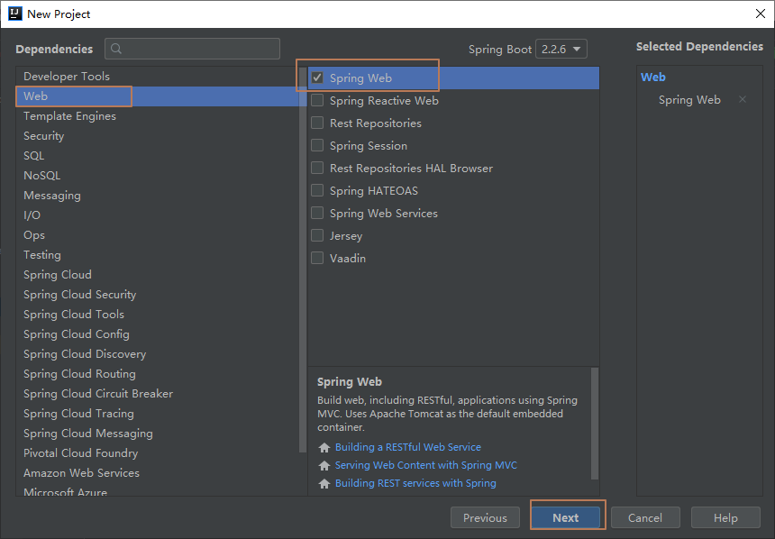
- 点击Finnish，完成！

- 剩下写代码跟方式一中的添加自己的代码就是一样的了。
- 在
Springboot01Hello2Application.java同级目录新建controller包，controller包下新建HelloController.java
xxxxxxxxxx71public class HelloController {3 ("/hello")4 public String hello(){5 return "Hello Spring Boot";6 }7}更改访问端口
- 在
application.properties中添加：
xxxxxxxxxx21# 更改默认端口2server.port=8081- 重新运行，访问：http://localhost:8081/hello
更改启动的banner
- 在网站https://www.bootschool.net/ascii中在线生成banner文件
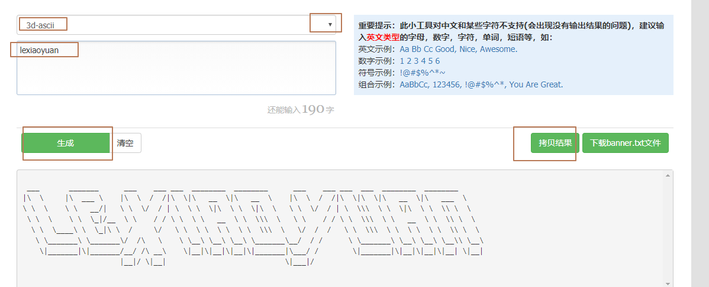
- 在resources目录下新建
banner.txt文件，将上一步拷贝的结果粘贴进去。
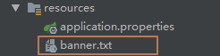
- 再次运行，就可以看到新的banner
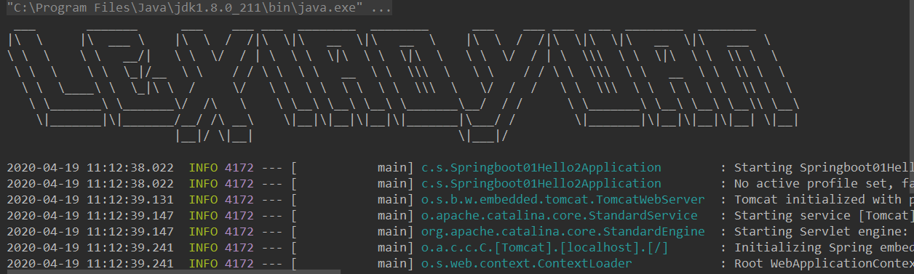
原理初探
pom.xml中的自动配置
1. 父工程
- 核心依赖都在父工程
spring-boot-dependencies中。 - 我们在引入一些Spring Boot依赖时，不需要指定版本，在父工程中已经有这些版本仓库。
2. 启动器
xxxxxxxxxx41<dependency>2 <groupId>org.springframework.boot</groupId>3 <artifactId>spring-boot-starter</artifactId>4</dependency>启动器：就是Spring Boot的启动场景，比如，定义了
spring-boot-starter-web，就会自动导入Web环境所有的依赖。Spring Boot会将所有的功能场景，都变成一个个的启动器。我们要使用什么功能，就只需要找到对应的启动器就可以了。
3. 主程序
注解【自动装配的核心】：
@SpringBootApplication：标注这个类是一个Spring Boot的应用，会导入启动类需要的所有资源
@SpringBootConfiguration——@Configuration——@Component
@ComponentScan：扫描当前主启动类同级的包
@EnableAutoConfiguration：自动导入包
- @AutoConfigurationPackage——@Import({Registrar.class})：自动注册包
- @Import({AutoConfigurationImportSelector.class})：自动导入包的核心
自动配置分析：https://www.processon.com/mindmap/5e527f11e4b02bc3ad5cdb95
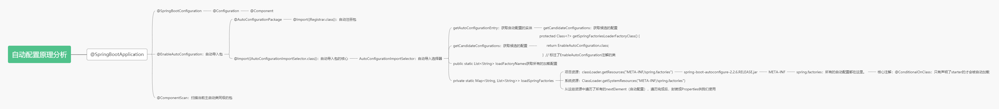
4. 结论
自动配置真正实现是从classpath中搜寻所有的
META-INF/spring.factories配置文件 ，并将其中对应的 org.springframework.boot.autoconfigure. 包下的配置项，通过反射实例化为对应标注了 @Configuration的JavaConfig形式的IOC容器配置类 ， 然后将这些都汇总成为一个实例并加载到IOC容器中。
META-INF/spring.factories的位置：
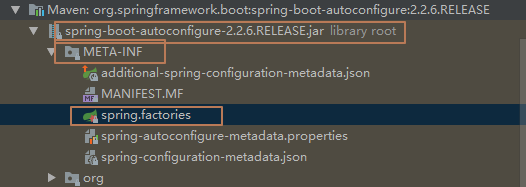
- SpringBoot在启动的时候从类路径下的META-INF/spring.factories中获取EnableAutoConfiguration指定的值
- 将这些值作为自动配置类导入容器 ， 自动配置类就生效 ， 帮我们进行自动配置工作；
- 整个J2EE的整体解决方案和自动配置都在springboot-autoconfigure的jar包中；
- 它会给容器中导入非常多的自动配置类 （xxxAutoConfiguration）, 就是给容器中导入这个场景需要的所有组件 ， 并配置好这些组件 ；
- 有了自动配置类 ， 免去了我们手动编写配置注入功能组件等的工作；
5. SpringApplication.run()
SpringApplication：这个类主要做4件事
- 推断应用的类型是普通的项目还是Web项目
- 查找并加载所有可用初始化器 ， 设置到initializers属性中
- 找出所有的应用程序监听器，设置到listeners属性中
- 推断并设置main方法的定义类，找到运行的主类
run方法流程分析

Spring Boot配置
配置文件
SpringBoot使用一个全局的配置文件 ， 配置文件名称是固定的
application.properties
- 语法结构 ：key=value
application.yml【现在推荐使用的】
- 语法结构 ：key：空格 value
配置文件的作用 ：修改SpringBoot自动配置的默认值
yaml概述
YAML是 "YAML Ain't a Markup Language" （YAML不是一种标记语言）的递归缩写。在开发的这种语言时，YAML 的意思其实是："Yet Another Markup Language"（仍是一种标记语言）
这种语言以数据作为中心，而不是以标记语言为重点！
yaml基础语法
说明：语法要求严格！
1、空格不能省略
2、以缩进来控制层级关系，只要是左边对齐的一列数据都是同一个层级的。
3、属性和值的大小写都是十分敏感的。
xxxxxxxxxx181# 普通的key-value2namelexiaoyuan34# 对象5student6 namelexiaoyuanbeta7 age2189# 行内写法10studentbetanamelexiaoyuan age211112# 数组13pets14dog15cat16pig1718petsbetadog cat pig通过@Value注解来注入值
- 新建实体类
Dog.java
xxxxxxxxxx401public class Dog {3 // 通过@Value注解来注入值4 ("胖哈")5 private String name;6 ("2")7 private int age;89 public Dog() {10 }1112 public Dog(String name, int age) {13 this.name = name;14 this.age = age;15 }1617 public String getName() {18 return name;19 }2021 public void setName(String name) {22 this.name = name;23 }2425 public int getAge() {26 return age;27 }2829 public void setAge(int age) {30 this.age = age;31 }3233 34 public String toString() {35 return "Dog{" +36 "name='" + name + '\'' +37 ", age=" + age +38 '}';39 }40}- 在新建Spring Boot项目时自动生成的测试类
Springboot02ConfigApplicationTests.java中写测试
xxxxxxxxxx121class Springboot02ConfigApplicationTests {34 5 private Dog dog;67 8 void contextLoads() {9 System.out.println(dog.toString());10 }1112}- 运行测试类
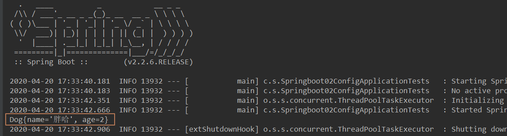
通过.yml配置文件来注入值
- 新建实体类
Person.java
xxxxxxxxxx961import java.util.Date;2import java.util.List;3import java.util.Map;45public class Person {7 private String name;8 private int age;9 private Boolean happy;10 private Date birth;11 private Map<String,Object> maps;12 private List<Object> lists;13 private Dog dog;1415 public Person() {16 }1718 public Person(String name, int age, Boolean happy, Date birth, Map<String, Object> maps, List<Object> lists, Dog dog) {19 this.name = name;20 this.age = age;21 this.happy = happy;22 this.birth = birth;23 this.maps = maps;24 this.lists = lists;25 this.dog = dog;26 }2728 public String getName() {29 return name;30 }3132 public void setName(String name) {33 this.name = name;34 }3536 public int getAge() {37 return age;38 }3940 public void setAge(int age) {41 this.age = age;42 }4344 public Boolean getHappy() {45 return happy;46 }4748 public void setHappy(Boolean happy) {49 this.happy = happy;50 }5152 public Date getBirth() {53 return birth;54 }5556 public void setBirth(Date birth) {57 this.birth = birth;58 }5960 public Map<String, Object> getMaps() {61 return maps;62 }6364 public void setMaps(Map<String, Object> maps) {65 this.maps = maps;66 }6768 public List<Object> getLists() {69 return lists;70 }7172 public void setLists(List<Object> lists) {73 this.lists = lists;74 }7576 public Dog getDog() {77 return dog;78 }7980 public void setDog(Dog dog) {81 this.dog = dog;82 }8384 85 public String toString() {86 return "Person{" +87 "name='" + name + '\'' +88 ", age=" + age +89 ", happy=" + happy +90 ", birth=" + birth +91 ", maps=" + maps +92 ", lists=" + lists +93 ", dog=" + dog +94 '}';95 }96}- 写
application.yml配置文件
xxxxxxxxxx131person2 namelexiaoyuan3 age214 happytrue5 birth1999/2/116 mapsk1v1 k2v27 lists8book9code10bug11 dog12 name胖哈beta13 age1- 在Person类上添加注解
@ConfigurationProperties
xxxxxxxxxx101/*2@ConfigurationProperties作用：3将配置文件中配置的每一个属性的值，映射到这个组件中；4告诉SpringBoot将本类中的所有属性和配置文件中相关的配置进行绑定5参数 prefix = “person” : 将配置文件中的person下面的所有属性一一对应6*/7(prefix = "person")8public class Person {9 // ...10}- 在
pom.xml中添加一个依赖
xxxxxxxxxx51<dependency>2 <groupId>org.springframework.boot</groupId>3 <artifactId>spring-boot-configuration-processor</artifactId>4 <optional>true</optional>5</dependency>- 在
Springboot02ConfigApplicationTests.java中写测试
xxxxxxxxxx151class Springboot02ConfigApplicationTests {34 5 private Dog dog;6 7 private Person person;89 10 void contextLoads() {11 System.out.println(dog.toString()); // Dog{name='胖哈', age=2}12 System.out.println(person.toString());13 }1415}- 运行测试类，输出：
Dog{name='胖哈', age=2} Person{name='lexiaoyuan', age=21, happy=true, birth=Thu Feb 11 00:00:00 CST 1999, maps={k1=v1, k2=v2}, lists=[book, code, bug], dog=Dog{name='胖哈beta', age=1}}
表示值均注入成功！
加载指定的配置文件
- 在resources目录下新建
person.properties
xxxxxxxxxx11name=lexiaoyuanbeta- 修改
Person.java，通过@PropertySource注解来指定加载文件
xxxxxxxxxx131//@ConfigurationProperties(prefix = "person")2(value = "classpath:person.properties")3public class Person {4 ("${name}") //支持SPEL表达式5 private String name;6 private int age;7 private Boolean happy;8 private Date birth;9 private Map<String,Object> maps;10 private List<Object> lists;11 private Dog dog;12 // ...13}- 再次运行测试类

可以看到，也注入成功。
.yml中配置占位符
- 修改
application.yml
xxxxxxxxxx141person2 namelexiaoyuan$random.uuid3 age$random.int4 happytrue5 birth1999/2/116 mapsk1v1 k2v27 lists8book9code10bug11 dog12 name$person.hello汪汪汪胖哈beta #如果person对象有hello属性，就取其值，否则取汪汪汪13 age114 # hello: hello world!- 修改
Person.java为原来的样子
xxxxxxxxxx131(prefix = "person")2//@PropertySource(value = "classpath:person.properties")3public class Person {4 //@Value("${name}") //支持SPEL表达式5 private String name;6 private int age;7 private Boolean happy;8 private Date birth;9 private Map<String,Object> maps;10 private List<Object> lists;11 private Dog dog;12 // ...13}- 再运行测试类
- 没有hello属性
Dog{name='胖哈', age=2} Person{name='lexiaoyuan6f3ed2b3-a6f2-4a44-bea6-9f97ee74beb0', age=-34976505, happy=true, birth=Thu Feb 11 00:00:00 CST 1999, maps={k1=v1, k2=v2}, lists=[book, code, bug], dog=Dog{name='汪汪汪胖哈beta', age=1}}
- 有hello属性
Dog{name='胖哈', age=2} Person{name='lexiaoyuan9145dacd-2235-4222-80ce-4a5f358fb9db', age=446368262, happy=true, birth=Thu Feb 11 00:00:00 CST 1999, maps={k1=v1, k2=v2}, lists=[book, code, bug], dog=Dog{name='hello world!胖哈beta', age=1}}
对比小结

1、@ConfigurationProperties只需要写一次即可 ， @Value则需要每个字段都添加
2、松散绑定：这个什么意思呢? 比如我的yml中写的last-name，这个和lastName是一样的， - 后面跟着的字母默认是大写的。这就是松散绑定。可以测试一下
3、JSR303数据校验 ， 这个就是我们可以在字段是增加一层过滤器验证 ， 可以保证数据的合法性
4、复杂类型封装，yml中可以封装对象 ， 使用value就不支持
结论
配置yml和配置properties都可以获取到值 ， 强烈推荐 yml；如果我们在某个业务中，只需要获取配置文件中的某个值，可以使用一下 @value；如果说，我们专门编写了一个JavaBean来和配置文件进行一一映射，就直接@configurationProperties，不要犹豫！
JSR303数据校验
Springboot中可以用
@validated来校验数据，如果数据异常则会统一抛出异常，方便异常中心统一处理。
- 常见的数据校验注解
xxxxxxxxxx181空检查2 验证对象是否为null3 验证对象是否不为null, 无法查检长度为0的字符串4 检查约束字符串是不是Null还有被Trim的长度是否大于0,只对字符串,且会去掉前后空格.5 检查约束元素是否为NULL或者是EMPTY.6 7Booelan检查8 验证 Boolean 对象是否为 true 9 验证 Boolean 对象是否为 false 10 11长度检查12(min=, max=) 验证对象（Array,Collection,Map,String）长度是否在给定的范围之内 13(min=, max=) string is between min and max included.1415日期检查16 验证 Date 和 Calendar 对象是否在当前时间之前 17 验证 Date 和 Calendar 对象是否在当前时间之后 18 验证 String 对象是否符合正则表达式的规则【支持正则表达式】- 修改
Person.java
xxxxxxxxxx131(prefix = "person")2 //数据校验3public class Person {4 //name只能为Email格式5 private String name;6 private int age;7 private Boolean happy;8 private Date birth;9 private Map<String,Object> maps;10 private List<Object> lists;11 private Dog dog;12 // ...13}- 再运行测试类，会报如下错误，提示name的值的格式错误。

- 修改
application.yml，再运行测试类
xxxxxxxxxx31person2 namelexiaoyuan@lxy.com #修改为Email格式3 # ...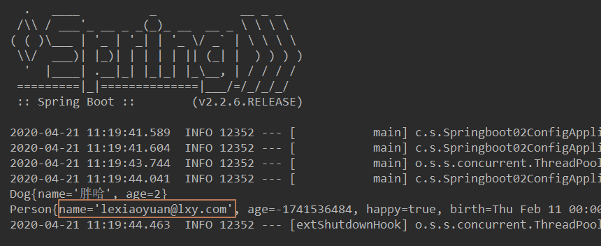
- 补充：所有格式校验注解的位置
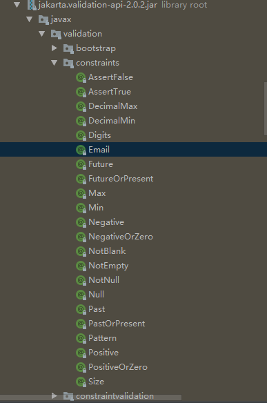
不同位置配置文件的优先级
注意：配置文件的文件名必须是application.yml 或 application.preproties
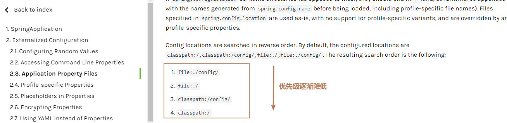
- 1、
file:./config/。是指在工程的根目录下的config目录下。现在工程目录下新建config文件夹，再在config目录下新建application.yml。
xxxxxxxxxx21server2 port8081 # 设置服务器启动端口为8081，默认是8080
- 2、
file:./。是指在工程的根目录下新建application.yml
xxxxxxxxxx21server2 port8084
- 3、
classpath:/config/。是指在类路径下的config目录下。在resources目录下新建config目录，再在config目录下新建application.yml
xxxxxxxxxx21server2 port8085
- 4、
classpath:/。是指在类路径下新建application.yml。（新建项目的默认位置）
xxxxxxxxxx21server2 port8086
- 现在运行以下项目，看会启动那个端口


可以看到，启动的是8081端口，即1、中file:./config/目录下。
- 现在删掉1、中新建的config目录，再运行看。
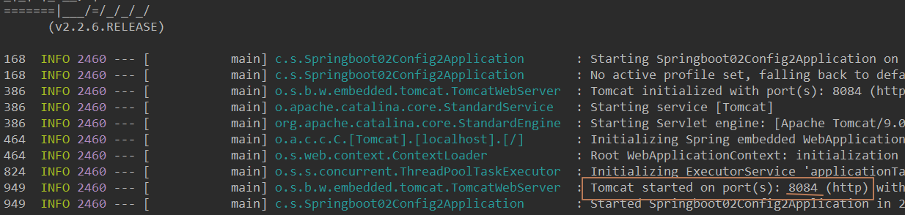
可以看到，启动的是8084端口，即2、中file:./目录下。
- 再删掉2、中
file:./目录，再运行看。
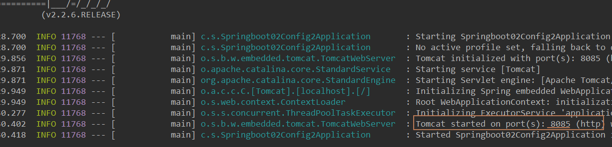
可以看到，启动的是8085端口，即3、中classpath:/config/目录下。
- 再删掉3、中
classpath:/config/目录，在运行看。

可以看到，启动的是8086端口，即4、中classpath:/目录下。
配置多环境切换
- 修改
application.yml
xxxxxxxxxx161server2 port80813 4--- # yml支持分割线，表示多文档块5# 开发环境6server7 port80848spring9 profilesdev1011---12# 测试环境13server14 port808515spring16 profilestest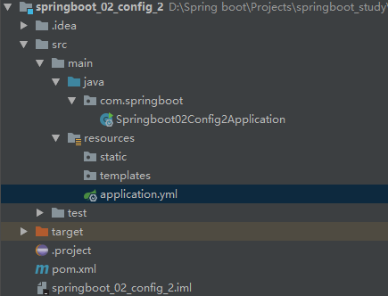
- 运行项目，看是用的那个端口
可以看到，用的是8081端口。
- 再修改
application.yml
xxxxxxxxxx181server2 port80813spring4 profiles5 activedev # 激活dev环境6--- # yml支持分割线，表示多文档块7# 开发环境8server9 port808410spring11 profilesdev1213---14# 测试环境15server16 port808517spring18 profilestest可以看到，已成功启用了dev环境，使用的是8084端口
- 再修改
application.yml
xxxxxxxxxx181server2 port80813spring4 profiles5 activetest # 激活test环境6--- # yml支持分割线，表示多文档块7# 开发环境8server9 port808410spring11 profilesdev1213---14# 测试环境15server16 port808517spring18 profilestest可以看到，已成功启用了test环境，使用的是8085端口
- 注意：
如果yml和properties同时都配置了端口，并且没有激活其他环境 ， 默认会使用properties配置文件的！**
Spring Boot Web开发
要解决的问题：
- 导入静态资源
- 定制首页
- jsp，模板引擎Thymeleaf
- 装配扩展
- 增删改查
- 拦截器
- 国际化
- 。。。
先新建一个普通的Spring Boot项目，添加Web支持，新建一个controller包，写一个hello请求，测试一下环境是否成功！成功！。
静态资源映射规则（一）
SpringBoot中，SpringMVC的web配置都在 WebMvcAutoConfiguration 这个配置类里面；我们可以去看看 WebMvcAutoConfigurationAdapter 中有很多配置方法；
- 有一个方法：addResourceHandlers 添加资源处理
xxxxxxxxxx191public void addResourceHandlers(ResourceHandlerRegistry registry) {2 if (!this.resourceProperties.isAddMappings()) {3 logger.debug("Default resource handling disabled");4 } else {5 Duration cachePeriod = this.resourceProperties.getCache().getPeriod();6 CacheControl cacheControl = this.resourceProperties.getCache().getCachecontrol().toHttpCacheControl();7 // webjars 配置8 if (!registry.hasMappingForPattern("/webjars/**")) {9 this.customizeResourceHandlerRegistration(registry.addResourceHandler(new String[]{"/webjars/**"}).addResourceLocations(new String[]{"classpath:/META-INF/resources/webjars/"}).setCachePeriod(this.getSeconds(cachePeriod)).setCacheControl(cacheControl));10 }1112 // 静态资源配置13 String staticPathPattern = this.mvcProperties.getStaticPathPattern();14 if (!registry.hasMappingForPattern(staticPathPattern)) {15 this.customizeResourceHandlerRegistration(registry.addResourceHandler(new String[]{staticPathPattern}).addResourceLocations(WebMvcAutoConfiguration.getResourceLocations(this.resourceProperties.getStaticLocations())).setCachePeriod(this.getSeconds(cachePeriod)).setCacheControl(cacheControl));16 }1718 }19}读一下源代码：可以知道所有的
/webjars/**， 都需要去classpath:/META-INF/resources/webjars/找对应的资源；
什么是webjars
Webjars本质就是以jar包的方式引入我们的静态资源 ， 我们以前要导入一个静态资源文件，直接导入即可。
使用SpringBoot需要使用Webjars，我们可以去搜索一下：
要使用jQuery，我们只要要引入jQuery对应版本的pom依赖即可！
xxxxxxxxxx51<dependency>2 <groupId>org.webjars</groupId>3 <artifactId>jquery</artifactId>4 <version>3.5.0</version>5</dependency>导入完毕，查看webjars目录结构，并访问Jquery.js文件！

访问：http://localhost:8080/webjars/jquery/3.5.0/jquery.js

可以看到，访问成功！
静态资源映射规则（二）
我们项目中要是使用自己的静态资源该怎么导入呢？我们看下一行代码；
xxxxxxxxxx51// 静态资源配置2String staticPathPattern = this.mvcProperties.getStaticPathPattern();3if (!registry.hasMappingForPattern(staticPathPattern)) {4 this.customizeResourceHandlerRegistration(registry.addResourceHandler(new String[]{staticPathPattern}).addResourceLocations(WebMvcAutoConfiguration.getResourceLocations(this.resourceProperties.getStaticLocations())).setCachePeriod(this.getSeconds(cachePeriod)).setCacheControl(cacheControl));5}点进getStaticLocations()这个方法可以看到在ResourceProperties 类中
xxxxxxxxxx81// 进入方法2public String[] getStaticLocations() {3 return this.staticLocations;4}5// 找到对应的值和路径6private static final String[] CLASSPATH_RESOURCE_LOCATIONS = new String[]{"classpath:/META-INF/resources/", "classpath:/resources/", "classpath:/static/", "classpath:/public/"};7private String[] staticLocations;8this.staticLocations = CLASSPATH_RESOURCE_LOCATIONS;ResourceProperties 类中可以设置和我们静态资源有关的参数；这里面指向了它会去寻找资源的文件夹，即上面数组的内容。
所以得出结论，以下四个目录存放的静态资源可以被我们识别：
xxxxxxxxxx41"classpath:/META-INF/resources/"2"classpath:/resources/"3"classpath:/static/"4"classpath:/public/"
我们可以在resources根目录下新建对应的文件夹，都可以存放我们的静态文件；
- 在resources目录下新建resources、public、static（默认有）文件夹，并在这些文件夹下新建1.js，为了以示区分，内容分别为
xxxxxxxxxx61// resources/1.js2console.log("resources")3// public/1.js4console.log("public")5// static/1.js6console.log("static")
- 运行项目，访问http://localhost:8080/1.js

说明访问的是resources/1.js，即resources目录下的静态资源优先级最高
- 删掉
resources/1.js目录，再运行，并访问http://localhost:8080/1.js
说明访问的是static/1.js，即static目录下的静态资源优先级第二
- 再删掉
static/1.js目录，再运行，并访问http://localhost:8080/1.js
说明访问的是public/1.js，即public目录下的静态资源优先级最低
首页如何定制
继续看配置类WebMvcAutoConfiguration中的源码，发现：
xxxxxxxxxx151public WelcomePageHandlerMapping welcomePageHandlerMapping(ApplicationContext applicationContext, FormattingConversionService mvcConversionService, ResourceUrlProvider mvcResourceUrlProvider) {3 WelcomePageHandlerMapping welcomePageHandlerMapping = new WelcomePageHandlerMapping(new TemplateAvailabilityProviders(applicationContext), applicationContext, this.getWelcomePage(), this.mvcProperties.getStaticPathPattern());4 welcomePageHandlerMapping.setInterceptors(this.getInterceptors(mvcConversionService, mvcResourceUrlProvider));5 return welcomePageHandlerMapping;6}78private Optional<Resource> getWelcomePage() {9 String[] locations = WebMvcAutoConfiguration.getResourceLocations(this.resourceProperties.getStaticLocations());10 return Arrays.stream(locations).map(this::getIndexHtml).filter(this::isReadable).findFirst();11}1213private Resource getIndexHtml(String location) {14 return this.resourceLoader.getResource(location + "index.html");15}欢迎页，静态资源文件夹下的所有 index.html 页面；被 /** 映射。
比如我访问 http://localhost:8080/ ，就会找静态资源文件夹下的 index.html
在我们上面的3个目录（/public，/resources，/static）中任意一个新建一个index.html，然后访问测试 http://localhost:8080/ 看结果！
xxxxxxxxxx101<html lang="en">3<head>4 <meta charset="UTF-8">5 <title>首页</title>6</head>7<body>8 <h1>首页</h1>9</body>10</html>
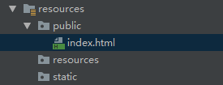
模板引擎
在SpringBoot项目中首先是以jar的方式，不是war，并且，我们用的还是嵌入式的Tomcat，所以呢，他现在默认是不支持jsp的。
SpringBoot推荐你可以来使用模板引擎：
模板引擎的作用就是我们来写一个页面模板，比如有些值呢，是动态的，我们写一些表达式。而这些值，从哪来呢，就是我们在后台封装一些数据。然后把这个模板和这个数据交给我们模板引擎，模板引擎按照我们这个数据帮你把这表达式解析、填充到我们指定的位置，然后把这个数据最终生成一个我们想要的内容给我们写出去，这就是我们这个模板引擎，不管是jsp还是其他模板引擎，都是这个思想。只不过呢，就是说不同模板引擎之间，他们可能这个语法有点不一样。其他的我就不介绍了，我主要来介绍一下SpringBoot给我们推荐的Thymeleaf模板引擎，这模板引擎呢，是一个高级语言的模板引擎，他的这个语法更简单。而且呢，功能更强大。
- 引入Thymeleaf
Thymeleaf 官网：https://www.thymeleaf.org/
Thymeleaf 在Github 的主页：https://github.com/thymeleaf/thymeleaf
xxxxxxxxxx91<!--Thymeleaf-->2<dependency>3 <groupId>org.thymeleaf</groupId>4 <artifactId>thymeleaf-spring5</artifactId>5</dependency>6<dependency>7 <groupId>org.thymeleaf.extras</groupId>8 <artifactId>thymeleaf-extras-java8time</artifactId>9</dependency>- 看一眼
ThymeleafProperties类

我们可以在其中看到默认的前缀和后缀！
我们只需要把我们的html页面放在类路径下的templates下，thymeleaf就可以帮我们自动渲染了。
使用thymeleaf什么都不需要配置，只需要引入依赖后，将html页面放在指定的文件夹下即可！
- 新建一个
TestController.java
xxxxxxxxxx71public class TestController {3 ("/test")4 public String test() {5 return "test";6 }7}- 在templates目录下新建一个
test.html
xxxxxxxxxx101<html lang="en">3<head>4 <meta charset="UTF-8">5 <title>Title</title>6</head>7<body>8 test thymeleaf9</body>10</html>Thymeleaf语法
官网文档介绍：
https://www.thymeleaf.org/doc/tutorials/3.0/usingthymeleaf.html#standard-expression-syntax
https://www.thymeleaf.org/doc/tutorials/3.0/usingthymeleaf.html#attribute-precedence
- 在
TestController.java中再写一个请求
xxxxxxxxxx61("/test2")2public String test2(Map<String, Object> map) {3 map.put("msg","<h1>Hello</h1>" );4 map.put("users", Arrays.asList("lexiaoyuan", "lexiaoyuanbeta"));5 return "test";6}- 修改
test.html
xxxxxxxxxx151<html lang="en" xmlns:th="http://www.thymeleaf.org">3<head>4 <meta charset="UTF-8">5 <title>Title</title>6</head>7<body>8test thymeleaf9<p th:text="${msg}"></p>10<!--不转义-->11<p th:utext="${msg}"></p>12<!--循环-->13<h3 th:each="user: ${users}" th:text="${user}"></h3>14</body>15</html>
说明：在标签中使用
th:不是一个标准的HTML文档，所以需要加入xmlns:th="http://www.thymeleaf.org"。如果想使用标准的HTML文档，则需要使用
data-，前缀的属性名称和连字符(-)分隔符，而不是分号(:)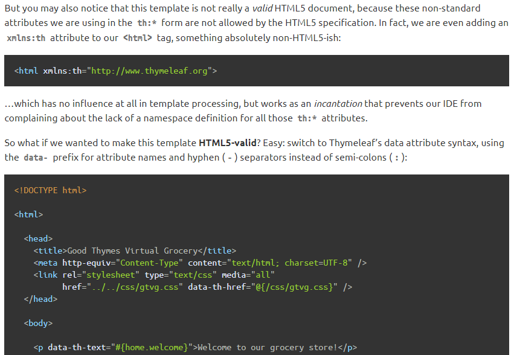
MVC自动配置原理
员工管理系统
准备工作
- 新建一个Spring Boot项目，并添加Web依赖。
- 将静态资源导入（将文件粘贴到文件夹下）到static目录和templates目录下

静态资源文件见：//TODO
- 在pom.xml中导入依赖
xxxxxxxxxx121<dependency>2 <groupId>org.projectlombok</groupId>3 <artifactId>lombok</artifactId>4</dependency>5<dependency>6 <groupId>org.thymeleaf</groupId>7 <artifactId>thymeleaf-spring5</artifactId>8</dependency>9<dependency>10 <groupId>org.thymeleaf.extras</groupId>11 <artifactId>thymeleaf-extras-java8time</artifactId>12</dependency>- 在
Springboot04SystemApplication.java同级目录新建如下目录，并在resources目录下新建public和resources目录用于后面保存不同类型的静态资源。
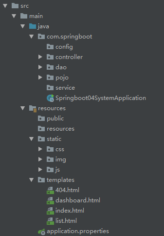
- 在pojo目录下新建实体类
Department.java和Employee.java
xxxxxxxxxx71public class Department {5 private Integer id;6 private String departmentName;7}xxxxxxxxxx201public class Employee {4 private Integer id;5 private String lastName;6 private String email;7 private Integer gender; // 0:女， 1：男8 private Department department;9 private Date birth;1011 public Employee(Integer id, String lastName, String email, Integer gender, Department department) {12 this.id = id;13 this.lastName = lastName;14 this.email = email;15 this.gender = gender;16 this.department = department;17 // 默认生成日期18 this.birth = new Date();19 }20}- 在dao目录下新建
DepartmentDao.java和EmployeeDao.java
xxxxxxxxxx281public class DepartmentDao {34 // 模拟数据库中数据56 private static Map<Integer, Department> departments;78 static {9 departments = new HashMap<>(); //创建一个部门表10 departments.put(101, new Department(101, "外交部"));11 departments.put(102, new Department(102, "工信部"));12 departments.put(103, new Department(103, "教育部"));13 departments.put(104, new Department(104, "公安部"));14 departments.put(105, new Department(105, "财政部"));1516 }1718 // 操作数据库19 // 获得所有部门的信息20 public Collection<Department> getDepartments() {21 return departments.values();22 }2324 // 通过id查询部门信息25 public Department getDepartmentById(Integer id) {26 return departments.get(id);27 }28}xxxxxxxxxx461public class EmployeeDao {34 // 模拟数据库中数据5 private static Map<Integer, Employee> employees;67 8 private DepartmentDao departmentDao; //每个员工有一个所属部门910 static {11 employees = new HashMap<>(); // 创建一个员工表12 employees.put(1001, new Employee(1001, "AA", "A10012345@qq.com", 0, new Department(101, "外交部")));13 employees.put(1002, new Employee(1002, "BB", "B10012345@qq.com", 1, new Department(101, "工信部")));14 employees.put(1003, new Employee(1003, "CC", "C10012345@qq.com", 0, new Department(101, "教育部")));15 employees.put(1004, new Employee(1004, "DD", "D10012345@qq.com", 1, new Department(101, "公安部")));16 employees.put(1005, new Employee(1005, "EE", "E10012345@qq.com", 0, new Department(101, "财政部")));17 }1819 // 操作数据库20 // id自增21 private static Integer initId = 1006;22 // 增加一名员工23 public void addEmployee(Employee employee){24 if(employee.getId() == null){25 employee.setId(initId++);26 }27 employee.setDepartment(departmentDao.getDepartmentById(employee.getDepartment().getId()));28 employees.put(employee.getId(), employee);29 }3031 // 查询全部员工信息32 public Collection<Employee> getAll() {33 return employees.values();34 }3536 // 通过id查询员工37 public Employee getEmployeeById(Integer id) {38 return employees.get(id);39 }4041 // 通过id删除员工42 public void deleteEmployeeById(Integer id) {43 employees.remove(id);44 }4546}定制首页
- 在config目录下新建
MyMvcConfig.java
xxxxxxxxxx91public class MyMvcConfig implements WebMvcConfigurer {3 4 public void addViewControllers(ViewControllerRegistry registry) {5 // 转到index.html6 registry.addViewController("/").setViewName("index");7 registry.addViewController("/index.html").setViewName("index");8 }9}修改
index.html- 首先需要添加thymeleaf的命名空间
xxxxxxxxxx11xmlns:th="http://www.thymeleaf.org"- 同时需要修改链接，要使用
@{...}

xxxxxxxxxx351<html lang="en" xmlns:th="http://www.thymeleaf.org">3 <head>4 <meta http-equiv="Content-Type" content="text/html; charset=UTF-8">5 <meta name="viewport" content="width=device-width, initial-scale=1, shrink-to-fit=no">6 <meta name="description" content="">7 <meta name="author" content="">8 <title>Sign in Template for Bootstrap</title>9 <link th:href="@{/css/bootstrap.min.css}" rel="stylesheet">10 <link th:href="@{/css/signin.css}" rel="stylesheet">11 </head>1213 <body class="text-center">14 <form class="form-signin" th:action="@{/user/login}">15 <img class="mb-4" th:src="@{/img/bootstrap-solid.svg}" alt="" width="72" height="72">16 <h1 class="h3 mb-3 font-weight-normal">Please sign in</h1>17 <p style="color: red"></p>18 <label class="sr-only"></label>19 <input type="text" name="username" class="form-control" placeholder="Username" required="" autofocus="">20 <label class="sr-only"></label>21 <input type="password" name="password" class="form-control" placeholder="Password" required="">22 <div class="checkbox mb-3">23 <label>24 <input type="checkbox" value="remember-me"> Remember me25 </label>26 </div>27 <button class="btn btn-lg btn-primary btn-block" type="submit">Sign in</button>28 <p class="mt-5 mb-3 text-muted">© 2020-</p>29 <a class="btn btn-sm" th:href="@{/index.html(l='zh_CN')}">中文</a>30 <a class="btn btn-sm" th:href="@{/index.html(l='en_US')}">English</a>31 </form>3233 </body>3435</html>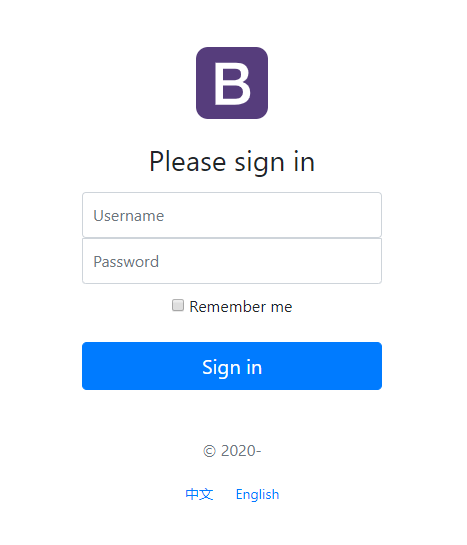
- 如果更改后访问没有更新，可能是thymeleaf模板引擎有缓存，可以在
application.properties中设置
xxxxxxxxxx21# 关闭模板引擎的缓存2spring.thymeleaf.cache=false- 还可以给访问增加一个目录，只需要修改
application.properties
xxxxxxxxxx21# 浏览器中所有的访问都需要加上/lexiaoyuan2server.servlet.context-path=/lexiaoyuan首页配置的注意点：所有页面的静态资源都需要使用thymeleaf接管
页面国际化配置
- 首先在设置里修改一下项目的编码！统一设置为UTF-8

- 编写国际化配置文件，在resources目录下新建i18n目录。然后在i18n目录下新建
login.properties、login_zh_CN.properties、login_en_US.properties文件

补充：可以看到IDEA会自动识别并更新了一个文件夹。
快捷操作：
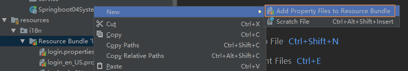

- 编写配置文件，可以通过可视化窗口编写


- 也可以直接在文件中编辑

- 配置好的文件
login.properties：
xxxxxxxxxx51login.password=密码2login.remember=记住我3login.signin=登录4login.tip=请登录5login.username=用户名login_en_US.properties：
xxxxxxxxxx51login.password=password2login.remember=Remember me3login.signin=Sign in4login.tip=Please sign in5login.username=Usernamelogin_zh_CN.properties：
xxxxxxxxxx51login.password=密码2login.remember=记住我3login.signin=登录4login.tip=请登录5login.username=用户名- 配置国际化的配置文件路径。在
application.properties中
xxxxxxxxxx21# 配置国际化的配置文件路径2spring.messages.basename=i18n.login- 在页面中得到配置的值
在thymeleaf中，通过添加
th:text=#{...}属性获取值，或者通过[[#{...}]]方式获取
xxxxxxxxxx171<form class="form-signin">2 <img class="mb-4" th:src="@{/img/bootstrap-solid.svg}" alt="" width="72" height="72">3 <h1 class="h3 mb-3 font-weight-normal">[[#{login.tip}]]</h1>4 <label class="sr-only"></label>5 <input type="text" name="username" class="form-control my-3" th:placeholder="#{login.username}" required="" autofocus="">6 <label class="sr-only"></label>7 <input type="password" name="password" class="form-control my-3" th:placeholder="#{login.password}" required="">8 <div class="checkbox mb-3">9 <label>10 <input type="checkbox" value="remember-me"> [[#{login.remember}]]11 </label>12 </div>13 <button class="btn btn-lg btn-primary btn-block" type="submit">[[#{login.signin}]]</button>14 <p class="mt-5 mb-3 text-muted">© 2020-2060</p>15 <a class="btn btn-sm">中文</a>16 <a class="btn btn-sm">English</a>17</form>通过点击按钮切换语言
- 首先在config目录下新建自定义的国际化配置类
MyLocaleResolver.java
xxxxxxxxxx231public class MyLocaleResolver implements LocaleResolver {3 // 解析请求4 5 public Locale resolveLocale(HttpServletRequest httpServletRequest) {6 String language = httpServletRequest.getParameter("lang");78 Locale locale = Locale.getDefault(); // 没有参数就使用默认的910 // 请求带有语言参数11 if(!StringUtils.isEmpty(language)){12 // 语言_地区13 String[] split = language.split("_");14 locale = new Locale(split[0], split[1]);15 }16 return locale;17 }1819 20 public void setLocale(HttpServletRequest httpServletRequest, HttpServletResponse httpServletResponse, Locale locale) {2122 }23}- 在
MyMvcConfig.java中注入自定义的组件
xxxxxxxxxx151public class MyMvcConfig implements WebMvcConfigurer {3 4 public void addViewControllers(ViewControllerRegistry registry) {5 // 转到index.html6 registry.addViewController("/").setViewName("index");7 registry.addViewController("/index.html").setViewName("index");8 }910 // 往容器中注入自定义的组件11 12 public LocaleResolver localeResolver(){13 return new MyLocaleResolver();14 }15}- 在前端
index.html页面中增加请求
在thymeleaf中使用
@{...}表示链接，使用()携带参数
xxxxxxxxxx21<a class="btn btn-sm" th:href="@{/index.html(lang='zh_CN')}">中文</a>2<a class="btn btn-sm" th:href="@{/index.html(lang='en_US')}">English</a>- 点击English

- OK！完成了国际化操作！
登录
- 在controller目录下写一个
LoginController.java处理登录请求
xxxxxxxxxx151public class LoginController {3 ("/user/login")4 public String login(5 ("username") String username,6 ("password") String password,7 Model model) {8 if(!StringUtils.isEmpty(username) && "123456".equals(password)) {9 return "redirect:/main.html";10 } else {11 model.addAttribute("msg", "用户名或密码错误");12 return "index";13 }14 }15}- 在
index.html的form元素中添加提交的请求
xxxxxxxxxx11<form class="form-signin" th:action="@{/user/login}" method="post"></form>- 在
MyMvcConfig.java中增加一个请求转发
xxxxxxxxxx81public void addViewControllers(ViewControllerRegistry registry) {3 // 转到index.html4 registry.addViewController("/").setViewName("index");5 registry.addViewController("/index.html").setViewName("index");6 // 转到主页7 registry.addViewController("/main.html").setViewName("dashboard");8}- 运行项目，访问：http://localhost:8080/，输入一个不为空的用户名，再输入密码为123456，点击登录，登录成功，跳转到dashboard页面
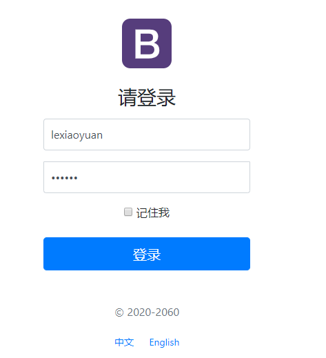
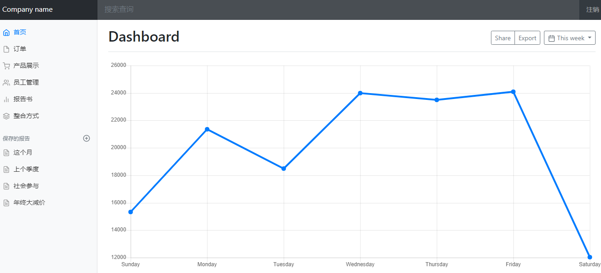
主页dashboard模板：https://getbootstrap.com/docs/4.0/examples/dashboard/#
如果密码不是123456，则显示：用户名或密码错误！
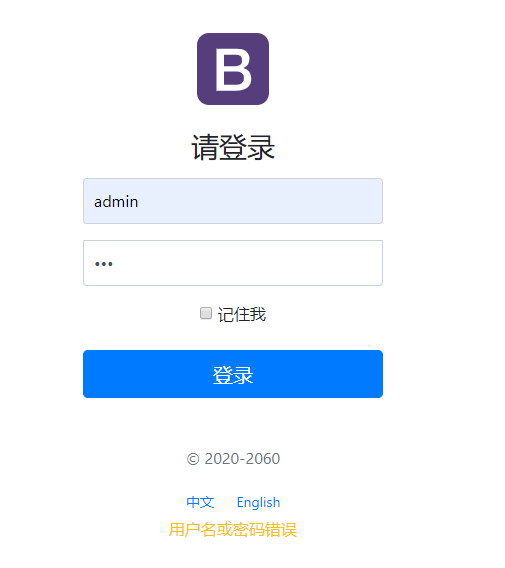
登录拦截
- 在config目录下新建一个
LoginHandlerInterceptor.java
xxxxxxxxxx141public class LoginHandlerInterceptor implements HandlerInterceptor {2 3 public boolean preHandle(HttpServletRequest request, HttpServletResponse response, Object handler) throws Exception {45 Object loginUser = request.getSession().getAttribute("loginUser");67 if (loginUser==null) {8 request.setAttribute("msg", "未登录，请先登录");9 request.getRequestDispatcher("/index.html").forward(request,response);10 return false;11 }12 return true;13 }14}- 在
MyMvcConfig.java中添加拦截器
xxxxxxxxxx71// 添加拦截器2public void addInterceptors(InterceptorRegistry registry) {4 registry.addInterceptor(new LoginHandlerInterceptor())5 .addPathPatterns("/**")6 .excludePathPatterns("/","/index.html", "/user/login","/css/**", "/js/**", "/img/**");7}- 测试：未登录时，直接访问：http://localhost:8080/main.html

登录之后再访问：http://localhost:8080/main.html
- 更改Company name
xxxxxxxxxx11<a class="navbar-brand col-sm-3 col-md-2 mr-0" href="http://getbootstrap.com/docs/4.0/examples/dashboard/#">[[${session.loginUser}]]</a>再重新Build一下项目即可，不用重新运行。（只修改前端代码，只需要重新Build一下就行）

再访问：http://localhost:8080/main.html
展示员工列表
点击员工管理就展示员工列表，但是顶部导航栏和侧边栏不变，所以要从
dashboard.html中抽取公共部分组件来引入。
- 在templates目录下新建commons目录用于存放公共部分，在commons目录下新建
fragment.html用于存放顶部导航栏和侧边栏
xxxxxxxxxx1391<html lang="en" xmlns:th="http://www.thymeleaf.org">3<head>4</head>5<body>6 <!--头部导航栏-->7 <nav class="navbar navbar-dark sticky-top bg-dark flex-md-nowrap p-0" th:fragment="topbar">8 <a class="navbar-brand col-sm-3 col-md-2 mr-0" href="http://getbootstrap.com/docs/4.0/examples/dashboard/#">[[${session.loginUser}]]</a>9 <input class="form-control form-control-dark w-100" type="text" placeholder="搜索查询" aria-label="Search">10 <ul class="navbar-nav px-3">11 <li class="nav-item text-nowrap">12 <a class="nav-link" th:href="@{/user/logout}">注销</a>13 </li>14 </ul>15 </nav>16 <!--侧边栏-->17 <nav class="col-md-2 d-none d-md-block bg-light sidebar" th:fragment="sidebar">18 <div class="sidebar-sticky">19 <ul class="nav flex-column">20 <li class="nav-item">21 <a th:class="${active=='main.html'?'nav-link active':'nav-link'}" th:href="@{/main.html}">22 <svg xmlns="http://www.w3.org/2000/svg" width="24" height="24" viewBox="0 0 24 24" fill="none" stroke="currentColor" stroke-width="2" stroke-linecap="round" stroke-linejoin="round" class="feather feather-home">23 <path d="M3 9l9-7 9 7v11a2 2 0 0 1-2 2H5a2 2 0 0 1-2-2z"></path>24 <polyline points="9 22 9 12 15 12 15 22"></polyline>25 </svg>26 首页27 </a>28 </li>29 <li class="nav-item">30 <a class="nav-link" href="http://getbootstrap.com/docs/4.0/examples/dashboard/#">31 <svg xmlns="http://www.w3.org/2000/svg" width="24" height="24" viewBox="0 0 24 24" fill="none" stroke="currentColor" stroke-width="2" stroke-linecap="round" stroke-linejoin="round" class="feather feather-file">32 <path d="M13 2H6a2 2 0 0 0-2 2v16a2 2 0 0 0 2 2h12a2 2 0 0 0 2-2V9z"></path>33 <polyline points="13 2 13 9 20 9"></polyline>34 </svg>35 订单36 </a>37 </li>38 <li class="nav-item">39 <a class="nav-link" href="http://getbootstrap.com/docs/4.0/examples/dashboard/#">40 <svg xmlns="http://www.w3.org/2000/svg" width="24" height="24" viewBox="0 0 24 24" fill="none" stroke="currentColor" stroke-width="2" stroke-linecap="round" stroke-linejoin="round" class="feather feather-shopping-cart">41 <circle cx="9" cy="21" r="1"></circle>42 <circle cx="20" cy="21" r="1"></circle>43 <path d="M1 1h4l2.68 13.39a2 2 0 0 0 2 1.61h9.72a2 2 0 0 0 2-1.61L23 6H6"></path>44 </svg>45 产品展示46 </a>47 </li>48 <li class="nav-item">49 <a th:class="${active=='list.html'?'nav-link active':'nav-link'}" th:href="@{/employeeList}">50 <svg xmlns="http://www.w3.org/2000/svg" width="24" height="24" viewBox="0 0 24 24" fill="none" stroke="currentColor" stroke-width="2" stroke-linecap="round" stroke-linejoin="round" class="feather feather-users">51 <path d="M17 21v-2a4 4 0 0 0-4-4H5a4 4 0 0 0-4 4v2"></path>52 <circle cx="9" cy="7" r="4"></circle>53 <path d="M23 21v-2a4 4 0 0 0-3-3.87"></path>54 <path d="M16 3.13a4 4 0 0 1 0 7.75"></path>55 </svg>56 员工管理57 </a>58 </li>59 <li class="nav-item">60 <a class="nav-link" href="http://getbootstrap.com/docs/4.0/examples/dashboard/#">61 <svg xmlns="http://www.w3.org/2000/svg" width="24" height="24" viewBox="0 0 24 24" fill="none" stroke="currentColor" stroke-width="2" stroke-linecap="round" stroke-linejoin="round" class="feather feather-bar-chart-2">62 <line x1="18" y1="20" x2="18" y2="10"></line>63 <line x1="12" y1="20" x2="12" y2="4"></line>64 <line x1="6" y1="20" x2="6" y2="14"></line>65 </svg>66 报告书67 </a>68 </li>69 <li class="nav-item">70 <a class="nav-link" href="http://getbootstrap.com/docs/4.0/examples/dashboard/#">71 <svg xmlns="http://www.w3.org/2000/svg" width="24" height="24" viewBox="0 0 24 24" fill="none" stroke="currentColor" stroke-width="2" stroke-linecap="round" stroke-linejoin="round" class="feather feather-layers">72 <polygon points="12 2 2 7 12 12 22 7 12 2"></polygon>73 <polyline points="2 17 12 22 22 17"></polyline>74 <polyline points="2 12 12 17 22 12"></polyline>75 </svg>76 整合方式77 </a>78 </li>79 </ul>8081 <h6 class="sidebar-heading d-flex justify-content-between align-items-center px-3 mt-4 mb-1 text-muted">82 <span>保存的报告</span>83 <a class="d-flex align-items-center text-muted" href="http://getbootstrap.com/docs/4.0/examples/dashboard/#">84 <svg xmlns="http://www.w3.org/2000/svg" width="24" height="24" viewBox="0 0 24 24" fill="none" stroke="currentColor" stroke-width="2" stroke-linecap="round" stroke-linejoin="round" class="feather feather-plus-circle"><circle cx="12" cy="12" r="10"></circle><line x1="12" y1="8" x2="12" y2="16"></line><line x1="8" y1="12" x2="16" y2="12"></line></svg>85 </a>86 </h6>87 <ul class="nav flex-column mb-2">88 <li class="nav-item">89 <a class="nav-link" href="http://getbootstrap.com/docs/4.0/examples/dashboard/#">90 <svg xmlns="http://www.w3.org/2000/svg" width="24" height="24" viewBox="0 0 24 24" fill="none" stroke="currentColor" stroke-width="2" stroke-linecap="round" stroke-linejoin="round" class="feather feather-file-text">91 <path d="M14 2H6a2 2 0 0 0-2 2v16a2 2 0 0 0 2 2h12a2 2 0 0 0 2-2V8z"></path>92 <polyline points="14 2 14 8 20 8"></polyline>93 <line x1="16" y1="13" x2="8" y2="13"></line>94 <line x1="16" y1="17" x2="8" y2="17"></line>95 <polyline points="10 9 9 9 8 9"></polyline>96 </svg>97 这个月98 </a>99 </li>100 <li class="nav-item">101 <a class="nav-link" href="http://getbootstrap.com/docs/4.0/examples/dashboard/#">102 <svg xmlns="http://www.w3.org/2000/svg" width="24" height="24" viewBox="0 0 24 24" fill="none" stroke="currentColor" stroke-width="2" stroke-linecap="round" stroke-linejoin="round" class="feather feather-file-text">103 <path d="M14 2H6a2 2 0 0 0-2 2v16a2 2 0 0 0 2 2h12a2 2 0 0 0 2-2V8z"></path>104 <polyline points="14 2 14 8 20 8"></polyline>105 <line x1="16" y1="13" x2="8" y2="13"></line>106 <line x1="16" y1="17" x2="8" y2="17"></line>107 <polyline points="10 9 9 9 8 9"></polyline>108 </svg>109 上个季度110 </a>111 </li>112 <li class="nav-item">113 <a class="nav-link" href="http://getbootstrap.com/docs/4.0/examples/dashboard/#">114 <svg xmlns="http://www.w3.org/2000/svg" width="24" height="24" viewBox="0 0 24 24" fill="none" stroke="currentColor" stroke-width="2" stroke-linecap="round" stroke-linejoin="round" class="feather feather-file-text">115 <path d="M14 2H6a2 2 0 0 0-2 2v16a2 2 0 0 0 2 2h12a2 2 0 0 0 2-2V8z"></path>116 <polyline points="14 2 14 8 20 8"></polyline>117 <line x1="16" y1="13" x2="8" y2="13"></line>118 <line x1="16" y1="17" x2="8" y2="17"></line>119 <polyline points="10 9 9 9 8 9"></polyline>120 </svg>121 社会参与122 </a>123 </li>124 <li class="nav-item">125 <a class="nav-link" href="http://getbootstrap.com/docs/4.0/examples/dashboard/#">126 <svg xmlns="http://www.w3.org/2000/svg" width="24" height="24" viewBox="0 0 24 24" fill="none" stroke="currentColor" stroke-width="2" stroke-linecap="round" stroke-linejoin="round" class="feather feather-file-text">127 <path d="M14 2H6a2 2 0 0 0-2 2v16a2 2 0 0 0 2 2h12a2 2 0 0 0 2-2V8z"></path>128 <polyline points="14 2 14 8 20 8"></polyline>129 <line x1="16" y1="13" x2="8" y2="13"></line>130 <line x1="16" y1="17" x2="8" y2="17"></line>131 <polyline points="10 9 9 9 8 9"></polyline>132 </svg>133 年终大减价134 </a>135 </li>136 </ul>137 </div>138 </nav>139</body>- 修改
dashboard.html，顶部导航栏的代码用下面的代码代替：
xxxxxxxxxx21<!--顶部导航栏-->2<div th:replace="commons/fragment :: topbar"></div>侧边栏部分用下面代码代替：
xxxxxxxxxx21<!--侧边栏-->2<div th:replace="commons/fragment :: sidebar(active='main.html')"></div>- 再写业务层（services层），在services目录下新建
EmployeeService.java
xxxxxxxxxx221public class EmployeeService {34 5 private EmployeeDao employeeDao;67 public void addEmployee(Employee employee){8 employeeDao.addEmployee(employee);9 }1011 public Collection<Employee> getAll() {12 return employeeDao.getAll();13 }1415 public Employee getEmployeeById(Integer id) {16 return employeeDao.getEmployeeById(id);17 }1819 public void deleteEmployeById(Integer id) {20 employeeDao.deleteEmployeeById(id);21 }22}- 再写控制层（controller层），在controller目录下新建
EmployeeController.java
xxxxxxxxxx131public class EmployeeController {34 5 private EmployeeService employeeService;67 ("/employeeList")8 public String employeeList(Model model) {9 model.addAttribute("employeeList", employeeService.getAll());10 return "employee/list";11 }1213}- 在templates目录下新建employee目录，用于存放关于员工的一些操作。将
list.html放到employee目录下，并修改
xxxxxxxxxx421<!--顶部导航栏-->2<div th:replace="commons/fragment :: topbar"></div>34<div class="container-fluid">5 <div class="row">6 <!--侧边栏-->7 <div th:replace="commons/fragment :: sidebar(active='list.html')"></div>89 <main role="main" class="col-md-9 ml-sm-auto col-lg-10 pt-3 px-4">10 <h2><a class="btn btn-sm btn-primary text-light">添加员工</a> </h2>11 <div class="table-responsive">12 <table class="table table-striped table-sm">13 <thead>14 <tr>15 <th>编号</th>16 <th>名字</th>17 <th>邮箱</th>18 <th>性别</th>19 <th>部门</th>20 <th>生日</th>21 <th>操作</th>22 </tr>23 </thead>24 <tbody>25 <tr th:each="employee:${employeeList}">26 <td th:text="${employee.getId()}"/>27 <td>[[${employee.getLastName()}]]</td>28 <td th:text="${employee.getEmail()}"/>29 <td th:text="${employee.getGender()==0? '女':'男'}"/>30 <td th:text="${employee.department.getDepartmentName()}"/>31 <td th:text="${#dates.format(employee.getBirth(),'yyyy-MM-dd HH:mm:ss')}"/>32 <td>33 <a class="btn btn-sm btn-primary text-light">编辑</a>34 <a class="btn btn-sm btn-danger text-light">删除</a>35 </td>36 </tr>37 </tbody>38 </table>39 </div>40 </main>41 </div>42</div>- 在
list.html中的员工管理的标签中添加请求链接th:href="@{/employeeList}"
xxxxxxxxxx111<li class="nav-item">2 <a th:class="${active=='list.html'?'nav-link active':'nav-link'}" th:href="@{/employeeList}">3 <svg xmlns="http://www.w3.org/2000/svg" width="24" height="24" viewBox="0 0 24 24" fill="none" stroke="currentColor" stroke-width="2" stroke-linecap="round" stroke-linejoin="round" class="feather feather-users">4 <path d="M17 21v-2a4 4 0 0 0-4-4H5a4 4 0 0 0-4 4v2"></path>5 <circle cx="9" cy="7" r="4"></circle>6 <path d="M23 21v-2a4 4 0 0 0-3-3.87"></path>7 <path d="M16 3.13a4 4 0 0 1 0 7.75"></path>8 </svg>9 员工管理10 </a>11</li>- 写
list.html中员工列表
xxxxxxxxxx321<main role="main" class="col-md-9 ml-sm-auto col-lg-10 pt-3 px-4">2 <h2><a class="btn btn-sm btn-primary text-light">添加员工</a> </h2>3 <div class="table-responsive">4 <table class="table table-striped table-sm">5 <thead>6 <tr>7 <th>编号</th>8 <th>名字</th>9 <th>邮箱</th>10 <th>性别</th>11 <th>部门</th>12 <th>生日</th>13 <th>操作</th>14 </tr>15 </thead>16 <tbody>17 <tr th:each="employee:${employeeList}">18 <td th:text="${employee.getId()}"/>19 <td>[[${employee.getLastName()}]]</td>20 <td th:text="${employee.getEmail()}"/>21 <td th:text="${employee.getGender()==0? '女':'男'}"/>22 <td th:text="${employee.department.getDepartmentName()}"/>23 <td th:text="${#dates.format(employee.getBirth(),'yyyy-MM-dd HH:mm:ss')}"/>24 <td>25 <a class="btn btn-sm btn-primary text-light">编辑</a>26 <a class="btn btn-sm btn-danger text-light">删除</a>27 </td>28 </tr>29 </tbody>30 </table>31 </div>32</main>解决只有当前选中的导航项高亮，即点击首页时，首页高亮，点击员工管理时，员工管理高亮。
- 在
dashboard.html中通过引入组件的方式访问首页时携带参数(active='main.html')
xxxxxxxxxx21<!--侧边栏-->2<div th:replace="commons/fragment :: sidebar(active='main.html')"></div>- 在
fragment.html中的首页链接添加判断th:class="${active=='main.html'?'nav-link active':'nav-link'}"
xxxxxxxxxx71<a th:class="${active=='main.html'?'nav-link active':'nav-link'}" th:href="@{/main.html}">2<svg xmlns="http://www.w3.org/2000/svg" width="24" height="24" viewBox="0 0 24 24" fill="none" stroke="currentColor" stroke-width="2" stroke-linecap="round" stroke-linejoin="round" class="feather feather-home">3<path d="M3 9l9-7 9 7v11a2 2 0 0 1-2 2H5a2 2 0 0 1-2-2z"></path>4<polyline points="9 22 9 12 15 12 15 22"></polyline>5</svg>6首页7</a>- 在
list.html中通过引入组件的方式访问首页时携带参数(active='list.html')
xxxxxxxxxx21<!--侧边栏-->2<div th:replace="commons/fragment :: sidebar(active='list.html')"></div>- 在
fragment.html中的员工管理链接添加判断th:class="${active=='list.html'?'nav-link active':'nav-link'}"
xxxxxxxxxx91<a th:class="${active=='list.html'?'nav-link active':'nav-link'}" th:href="@{/employeeList}">2<svg xmlns="http://www.w3.org/2000/svg" width="24" height="24" viewBox="0 0 24 24" fill="none" stroke="currentColor" stroke-width="2" stroke-linecap="round" stroke-linejoin="round" class="feather feather-users">3<path d="M17 21v-2a4 4 0 0 0-4-4H5a4 4 0 0 0-4 4v2"></path>4<circle cx="9" cy="7" r="4"></circle>5<path d="M23 21v-2a4 4 0 0 0-3-3.87"></path>6<path d="M16 3.13a4 4 0 0 1 0 7.75"></path>7</svg>8员工管理9</a>- 在
登录成功，默认访问：http://localhost:8080/main.html

- 点击员工管理，默认访问：http://localhost:8080/employeeList
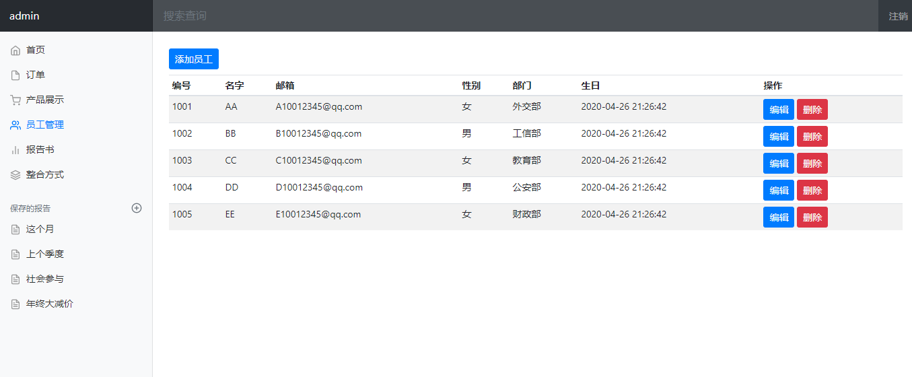
- ok，展示员工列表应该是已经完成了！
增加员工
- 首先在员工列表上面添加一个添加员工的按钮
xxxxxxxxxx31<h2>2 <a class="btn btn-sm btn-primary text-light" th:href="@{/addEmployee}">添加员工</a>3</h2>- 在employee目录下新建一个添加员工的页面
add.html，其他部分和list.html一样，下面只给出表单部分
xxxxxxxxxx351<main role="main" class="col-md-9 ml-sm-auto col-lg-10 pt-3 px-4">2 <h3>添加员工</h3>3 <form th:action="@{/addEmployee}" method="post">4 <div class="form-group">5 <label>姓名</label>6 <input type="text" name="lastName" class="form-control" placeholder="姓名" required>7 </div>8 <div class="form-group">9 <label>邮箱</label>10 <input type="email" name="email" class="form-control" placeholder="邮箱" required>11 </div>12 <div class="form-group">13 <label>性别</label><br/>14 <div class="form-check form-check-inline">15 <input class="form-check-input" type="radio" name="gender" value="1" checked>16 <label class="form-check-label">男</label>17 </div>18 <div class="form-check form-check-inline">19 <input class="form-check-input" type="radio" name="gender" value="0">20 <label class="form-check-label">女</label>21 </div>22 </div>23 <div class="form-group">24 <label>部门选择</label>25 <select class="form-control" th:name="department.id">26 <option th:each="department : ${departments}" th:text="${department.getDepartmentName()}" th:value="${department.getId()}"/>27 </select>28 </div>29 <div class="form-group">30 <label>出生日期</label>31 <input type="text" name="birth" class="form-control" placeholder="yyyy-MM-dd" required>32 </div>33 <button type="submit" class="btn btn-primary">添加</button>34 </form>35</main>- 在部门选择的表单中，当跳转到这个页面时，就要查询出所有的部门并显示出来。所以，在services目录下新建一个
DepartmentService.java
xxxxxxxxxx131public class DepartmentService {3 4 private DepartmentDao departmentDao;56 public Collection<Department> getDepartments() {7 return departmentDao.getDepartments();8 }910 public Department getDepartmentById(Integer id) {11 return departmentDao.getDepartmentById(id);12 }13}- 在
EmployeeController.java中添加跳转到添加员工的请求
xxxxxxxxxx71private DepartmentService departmentService;3("/addEmployee")4public String toAddEmployee(Model model) {5 model.addAttribute("departments", departmentService.getDepartments());6 return "employee/add";7}- 在添加员工的
add.html的form表单中添加action属性
xxxxxxxxxx31<form th:action="@{/addEmployee}" method="post">2...3</form>- 在
EmployeeController.java中添加一个处理添加员工的请求
xxxxxxxxxx51("/addEmployee")2public String addEmployee(Employee employee) {3 employeeService.addEmployee(employee);4 return "redirect:/employeeList";5}- 登录成功后，点击添加员工按钮
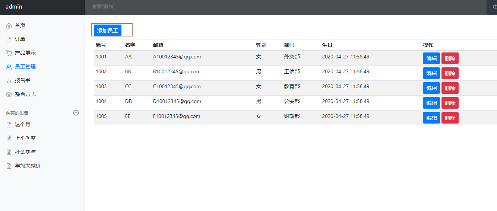
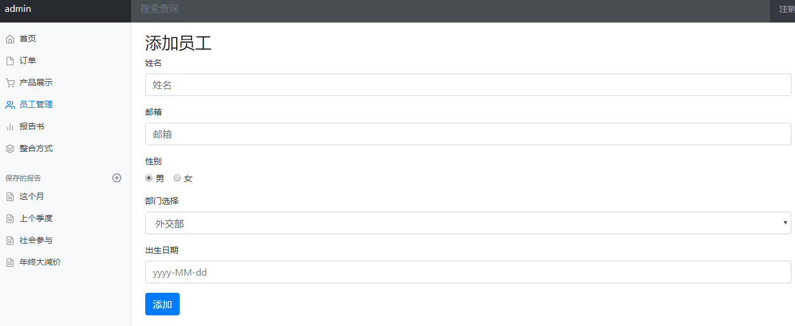
输入信息
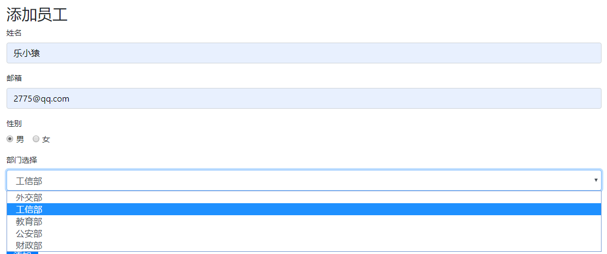
注意，这里的日期格式，必须要这么输入，这个格式是后台默认允许的接收格式，用/分隔

- 点击添加，可以看到，添加成功

- 修改日期的接收格式，在
application.properties中配置
xxxxxxxxxx21# 配置日期格式2spring.mvc.date-format=yyyy-MM-dd这样前端就可以按yyyy-MM-dd格式输入，用-分隔，注意：配置后就只能采用这种格式输入，否则会报错
- 重新运项目，登录并添加员工

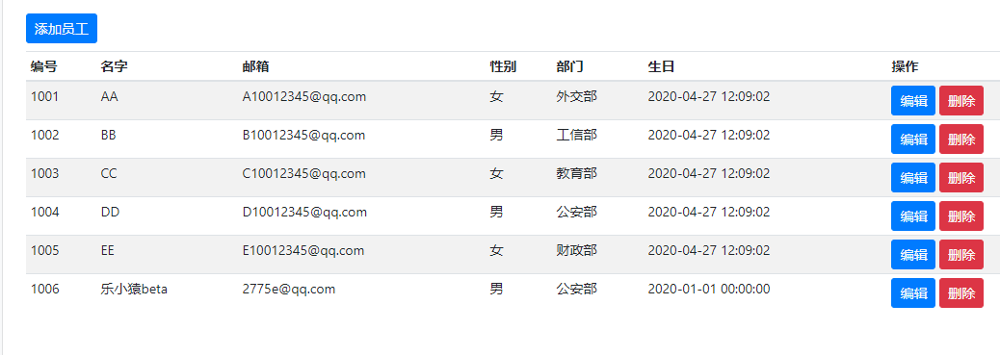
- 如果输入的日期格式错误，就会报错
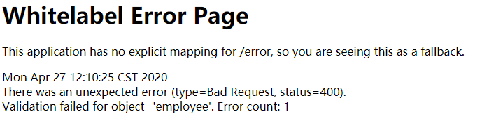
- ok，增加员工的功能完成！
修改员工信息
- 首先修改编辑按钮的链接，请求updateEmployee，并携带参数，即当前要修改的id
xxxxxxxxxx11<a class="btn btn-sm btn-primary text-light" th:href="@{/updateEmployee/{id}(id=${employee.getId()})}">编辑</a>- 在
EmployeeController.java中写方法来接受这个请求
xxxxxxxxxx61("/updateEmployee/{id}")2public String toUpdateEmployee(("id") Integer id, Model model) {3 model.addAttribute("employee", employeeService.getEmployeeById(id));4 model.addAttribute("departments", departmentService.getDepartments());5 return "employee/update";6}- 在employee目录下新建
update.html，内容和add.html基本一样，只需要修改表单部分
xxxxxxxxxx391<main role="main" class="col-md-9 ml-sm-auto col-lg-10 pt-3 px-4">2 <h3>编辑信息</h3>3 <form th:action="@{/updateEmployee/{id}(id=${employee.getId()})}" method="post">4 <div class="form-group">5 <label>姓名</label>6 <input type="text" name="lastName" class="form-control" placeholder="姓名" required th:value="${employee.getLastName()}">7 </div>8 <div class="form-group">9 <label>邮箱</label>10 <input type="email" name="email" class="form-control" placeholder="邮箱" required th:value="${employee.getEmail()}">11 </div>12 <div class="form-group">13 <label>性别</label><br/>14 <div class="form-check form-check-inline">15 <input class="form-check-input" type="radio" name="gender" value="1" th:checked="${employee.getGender() == 1}">16 <label class="form-check-label">男</label>17 </div>18 <div class="form-check form-check-inline">19 <input class="form-check-input" type="radio" name="gender" value="0" th:checked="${employee.getGender() == 0}">20 <label class="form-check-label">女</label>21 </div>22 </div>23 <div class="form-group">24 <label>部门选择</label>25 <select class="form-control" th:name="department.id">26 <option27 th:each="department : ${departments}"28 th:text="${department.getDepartmentName()}"29 th:value="${department.getId()}"30 th:selected="${employee.getDepartment().getId() == department.getId()}"/>31 </select>32 </div>33 <div class="form-group">34 <label>出生日期</label>35 <input type="text" name="birth" class="form-control" placeholder="yyyy-MM-dd" required th:value="${#dates.format(employee.getBirth(), 'yyyy-MM-dd')}">36 </div>37 <button type="submit" class="btn btn-primary">修改</button>38 </form>39</main>- 再在
EmployeeController.java中写一个接受修改的请求
xxxxxxxxxx61("/updateEmployee/{id}")2public String updateEmployee(("id") Integer id, Employee employee) {3 employee.setId(id);4 employeeService.addEmployee(employee);5 return "redirect:/employeeList";6}- 再运行项目，并登录，点击员工管理，再在员工列表中点击修改按钮。

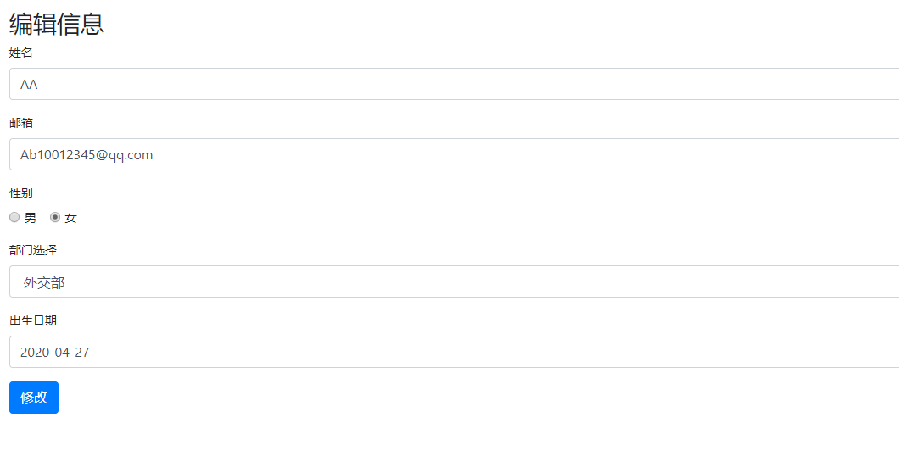

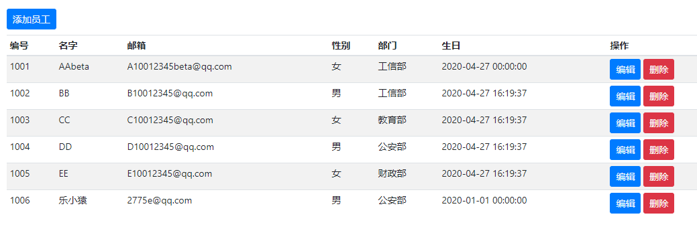
- ok，修改员工已经成功！
删除员工
- 在
list.html中的删除按钮上添加删除请求th:href="@{/deleteEmployee/{id}(id=${employee.getId()})}"
xxxxxxxxxx11<a class="btn btn-sm btn-danger text-light" th:href="@{/deleteEmployee/{id}(id=${employee.getId()})}">删除</a>- 在
EmployeeController.java中增加一个删除请求
xxxxxxxxxx51("/deleteEmployee/{id}")2public String deleteEmployee(("id") Integer id) {3 employeeService.deleteEmployeeById(id);4 return "redirect:/employeeList";5}- 重新运行项目，登录成功后，点击员工管理，在员工列表中点击删除按钮，可以看到，删除成功

- OK。删除功能完成
注销
- 在
fragment.html中添加注销请求
xxxxxxxxxx11<a class="nav-link" th:href="@{/user/logout}">注销</a>- 在
LoginController.java中添加方法接受注销请求
xxxxxxxxxx51("/user/logout")2public String logout(HttpSession session) {3 session.invalidate();4 return "redirect:/index.html";5}- 重新运行项目，登录成功后，点击员工管理，再点击注销按钮
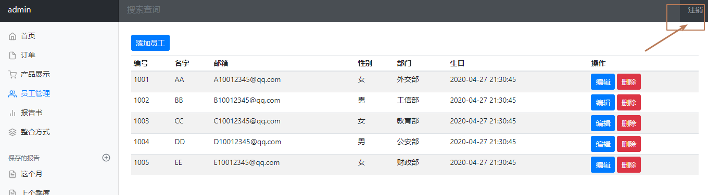
- 重新回到登录页面，再直接访问：http://localhost:8080/main.html ，被拦截，需要登录

- OK，注销功能也完成了！
配置404页面
- 只需要在templates目录下新建error目录，并将
404.html页面放到error目录下，就可以了，会自动访问
xxxxxxxxxx101<html lang="en">3<head>4 <meta charset="UTF-8">5 <title>404</title>6</head>7<body>8<h1>404</h1>9</body>10</html>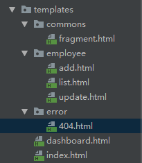
类似的，
500.html，400.html，等等都是放到error目录下，就可以自动识别
- 访问一个错误的地址：http://localhost:8080/123

- ok，404页面也配置好了！
整合JDBC
Spring Data简介
官网：https://spring.io/projects/spring-data
对于数据访问层，无论是 SQL(关系型数据库) 还是 NOSQL(非关系型数据库)，Spring Boot 底层都是采用 Spring Data 的方式进行统一处理。
Spring Boot 底层都是采用 Spring Data 的方式进行统一处理各种数据库，Spring Data 也是 Spring 中与 Spring Boot、Spring Cloud 等齐名的知名项目。
数据库相关的启动器 ：可以参考官方文档：https://docs.spring.io/spring-boot/docs/2.2.6.RELEASE/reference/html/using-spring-boot.html#using-boot
整合JDBC
- 新建一个Spring Boot项目
springboot_05_jdbc，添加web和SQL的依赖
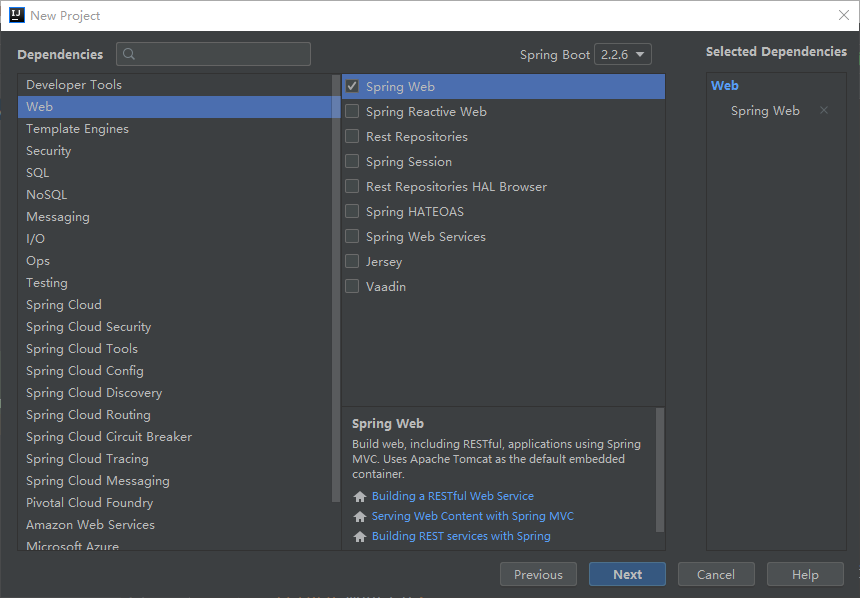
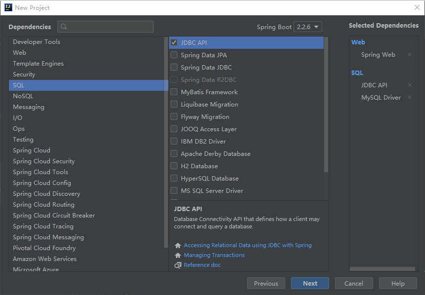

- 运行MySQL服务，确保能够连接上mysql，通过IDEA连接mysql中之前建立的mybatis数据库
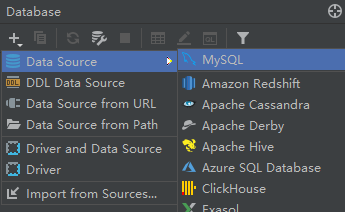


- 在resources目录下新建
application.yml配置连接信息
xxxxxxxxxx61spring2 datasource3 urljdbcmysql//localhost3306/mybatis?useUnicode=true&characterEncoding=utf-8&serverTimezone=UTC4 usernameroot5 password1234566 driver-class-namecom.mysql.cj.jdbc.Driver- 配置完后就可以使用了，在test目录下自动生成的测试类
Springboot05JdbcApplicationTests.java中测试一下
xxxxxxxxxx201class Springboot05JdbcApplicationTests {3 4 DataSource dataSource;56 7 void contextLoads() throws SQLException {8 // 查看默认的数据源：HikariDataSource9 System.out.println("dataSource===>"+dataSource);1011 //获取数据库连接12 Connection connection = dataSource.getConnection();13 System.out.println("connection====>" + connection);1415 // 关闭16 connection.close();1718 }1920}输出结果：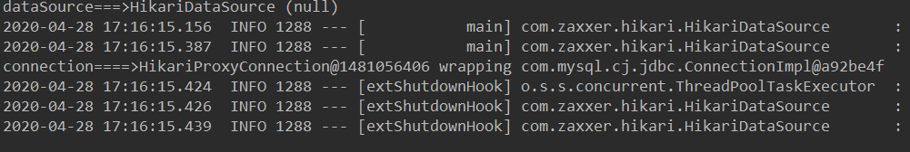
默认给我们配置的数据源为 : class com.zaxxer.hikari.HikariDataSource
HikariDataSource 号称 Java WEB 当前速度最快的数据源，相比于传统的 C3P0 、DBCP、Tomcat jdbc 等连接池更加优秀；
JDBCTemplate
1、有了数据源(com.zaxxer.hikari.HikariDataSource)，然后可以拿到数据库连接(java.sql.Connection)，有了连接，就可以使用原生的 JDBC 语句来操作数据库；
2、即使不使用第三方第数据库操作框架，如 MyBatis等，Spring 本身也对原生的JDBC 做了轻量级的封装，即JdbcTemplate。
3、数据库操作的所有 CRUD 方法都在 JdbcTemplate 中。
4、Spring Boot 不仅提供了默认的数据源，同时默认已经配置好了 JdbcTemplate 放在了容器中，程序员只需自己注入即可使用
5、JdbcTemplate 的自动配置是依赖 org.springframework.boot.autoconfigure.jdbc 包下的 JdbcTemplateConfiguration 类
JdbcTemplate主要提供以下几类方法：
- execute方法：可以用于执行任何SQL语句，一般用于执行DDL语句；
- update方法及batchUpdate方法：update方法用于执行新增、修改、删除等语句；batchUpdate方法用于执行批处理相关语句；
- query方法及queryForXXX方法：用于执行查询相关语句；
- call方法：用于执行存储过程、函数相关语句。
- 使用JdbcTemplate，在
Springboot05JdbcApplication.java同级目录新建controller包，在controller包下新建JDBCController.java
xxxxxxxxxx381public class JDBCController {3 4 private JdbcTemplate jdbcTemplate;56 ("/all")7 // List中的一个Map对应表中的一行数据8 // Map中的key对应字段名，value对应字段值9 public List<Map<String, Object>> getAll() {10 String sql = "select * from user;";11 List<Map<String, Object>> mapList = jdbcTemplate.queryForList(sql);12 return mapList;13 }1415 ("/add")16 public String addUser() {17 String sql = "insert into user (id, name, pwd) values (4, 'Spring boot', 'boot');";18 jdbcTemplate.update(sql);19 return "add ok";20 }2122 ("/update/{id}")23 public String updateUser(("id") int id) {24 String sql = "update user set name = ? , pwd = ? where id = "+id+";";25 Object[] objects = new Object[2];26 objects[0] = "beta";27 objects[1] = "beta2";28 jdbcTemplate.update(sql, objects);29 return "update ok";30 }3132 ("/delete/{id}")33 public String deleteUser(("id") int id) {34 String sql = "delete from user where id = ?";35 jdbcTemplate.update(sql, id);36 return "delete ok";37 }38}测试：运行Web项目


再看数据表，新增成功！


再看数据表，修改成功！
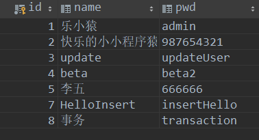

再看数据表，删除成功！

ok，整合JDBC完成！简单的CRUD也完成！
整合Druid
中文文档：https://github.com/alibaba/druid/wiki/%E5%B8%B8%E8%A7%81%E9%97%AE%E9%A2%98
Maven地址：https://mvnrepository.com/artifact/com.alibaba/druid/1.1.22
Druid 是阿里巴巴开源平台上一个数据库连接池实现，结合了 C3P0、DBCP 等 DB 池的优点，同时加入了日志监控。
Druid 可以很好的监控 DB 池连接和 SQL 的执行情况，天生就是针对监控而生的 DB 连接池。
- 常见配置参数

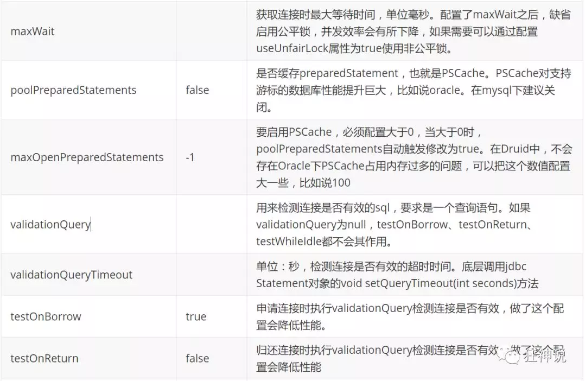
配置数据源
- 在
pom.xml中导入依赖
xxxxxxxxxx61<!-- https://mvnrepository.com/artifact/com.alibaba/druid -->2<dependency>3 <groupId>com.alibaba</groupId>4 <artifactId>druid</artifactId>5 <version>1.1.22</version>6</dependency>- 在
application.yml中增加一个type属性，切换数据源
xxxxxxxxxx71spring2 datasource3 urljdbcmysql//localhost3306/mybatis?useUnicode=true&characterEncoding=utf-8&serverTimezone=UTC4 usernameroot5 password1234566 driver-class-namecom.mysql.cj.jdbc.Driver7 typecom.alibaba.druid.pool.DruidDataSource # 自定义数据源- 再次运行测试类，可以看到数据源已经切换了

- 切换成功，那就可以自己配置一些druid独有的配置
xxxxxxxxxx291spring2 datasource3 urljdbcmysql//localhost3306/mybatis?useUnicode=true&characterEncoding=utf-8&serverTimezone=UTC4 usernameroot5 password1234566 driver-class-namecom.mysql.cj.jdbc.Driver7 typecom.alibaba.druid.pool.DruidDataSource # 自定义数据源89 #Spring Boot 默认是不注入这些属性值的，需要自己绑定10 #druid 数据源专有配置11 initialSize512 minIdle513 maxActive2014 maxWait6000015 timeBetweenEvictionRunsMillis6000016 minEvictableIdleTimeMillis30000017 validationQuerySELECT 1 FROM DUAL18 testWhileIdletrue19 testOnBorrowfalse20 testOnReturnfalse21 poolPreparedStatementstrue2223 #配置监控统计拦截的filters，stat:监控统计、log4j：日志记录、wall：防御sql注入24 #如果允许时报错 java.lang.ClassNotFoundException: org.apache.log4j.Priority25 #则导入 log4j 依赖即可，Maven 地址：https://mvnrepository.com/artifact/log4j/log4j26 filtersstat,wall,log4j27 maxPoolPreparedStatementPerConnectionSize2028 useGlobalDataSourceStattrue29 connectionPropertiesdruid.stat.mergeSql=true;druid.stat.slowSqlMillis=500- 导入log4j的依赖
xxxxxxxxxx51<dependency>2 <groupId>log4j</groupId>3 <artifactId>log4j</artifactId>4 <version>1.2.17</version>5</dependency>- 将自定义的 Druid数据源添加到容器中，不再让 Spring Boot 自动创建，在controller同级目录新建config目录，config目录下新建
DruidConfig.java
xxxxxxxxxx231package com.springboot.config;23import com.alibaba.druid.pool.DruidDataSource;4import org.springframework.boot.context.properties.ConfigurationProperties;5import org.springframework.context.annotation.Bean;6import org.springframework.context.annotation.Configuration;78import javax.sql.DataSource;910public class DruidConfig {12 /*13 将自定义的 Druid数据源添加到容器中，不再让 Spring Boot 自动创建14 绑定全局配置文件中的 druid 数据源属性到 com.alibaba.druid.pool.DruidDataSource从而让它们生效15 @ConfigurationProperties(prefix = "spring.datasource")：作用就是将 全局配置文件中16 前缀为 spring.datasource的属性值注入到 com.alibaba.druid.pool.DruidDataSource 的同名参数中17 */18 (prefix = "spring.datasource")19 20 public DataSource druidDataSource() {21 return new DruidDataSource();22 }23}- 再到测试类测试一下
xxxxxxxxxx241class Springboot05JdbcApplicationTests {3 4 DataSource dataSource;56 7 void contextLoads() throws SQLException {8 // 查看默认的数据源：HikariDataSource9 System.out.println("dataSource===>"+dataSource.getClass());1011 //获取数据库连接 HikariProxyConnection@1481056406 wrapping com.mysql.cj.jdbc.ConnectionImpl@a92be4f12 Connection connection = dataSource.getConnection();13 System.out.println("connection====>" + connection);1415 DruidDataSource druidDataSource = (DruidDataSource) dataSource;16 System.out.println("druidDataSource 数据源最大连接数：" + druidDataSource.getMaxActive());17 System.out.println("druidDataSource 数据源初始化连接数：" + druidDataSource.getInitialSize());1819 // 关闭20 connection.close();2122 }2324}
可以看到，配置的参数已经生效
配置Druid数据源监控
- 在
DruidConfig.java中配置
xxxxxxxxxx231//配置 Druid 监控管理后台的Servlet；2//内置 Servlet 容器时没有web.xml文件，所以使用 Spring Boot 的注册 Servlet 方式3public ServletRegistrationBean statViewServlet() {5 ServletRegistrationBean bean = new ServletRegistrationBean(new StatViewServlet(), "/druid/*");67 // 这些参数可以在 com.alibaba.druid.support.http.StatViewServlet8 // 的父类 com.alibaba.druid.support.http.ResourceServlet 中找到9 Map<String, String> initParams = new HashMap<>();10 initParams.put("loginUsername", "admin"); //后台管理界面的登录账号11 initParams.put("loginPassword", "123456"); //后台管理界面的登录密码1213 //后台允许谁可以访问14 //initParams.put("allow", "localhost")：表示只有本机可以访问15 //initParams.put("allow", "")：为空或者为null时，表示允许所有访问16 initParams.put("allow", "");17 //deny：Druid 后台拒绝谁访问18 //initParams.put("lexiaoyuan", "192.168.1.20");表示禁止此ip访问1920 //设置初始化参数21 bean.setInitParameters(initParams);22 return bean;23}- 运行web项目，访问：http://localhost:8080/druid/login.html
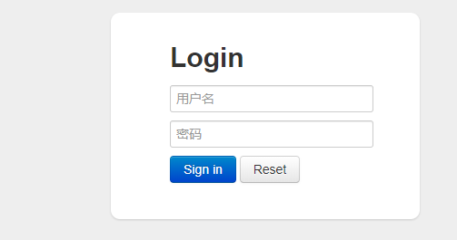
- 输入用户名：admin，密码：123456，登录

配置 Druid web 监控 filter 过滤器
- 在
DruidConfig.java中配置
xxxxxxxxxx161//配置 Druid 监控 之 web 监控的 filter2//WebStatFilter：用于配置Web和Druid数据源之间的管理关联监控统计3public FilterRegistrationBean webStatFilter() {5 FilterRegistrationBean bean = new FilterRegistrationBean();6 bean.setFilter(new WebStatFilter());78 //exclusions：设置哪些请求进行过滤排除掉，从而不进行统计9 Map<String, String> initParams = new HashMap<>();10 initParams.put("exclusions", "*.js,*.css,/druid/*,/jdbc/*");11 bean.setInitParameters(initParams);1213 //"/*" 表示过滤所有请求14 bean.setUrlPatterns(Arrays.asList("/*"));15 return bean;16}整合MyBatis
官方文档：http://mybatis.org/spring-boot-starter/mybatis-spring-boot-autoconfigure/
GitHub文档地址：https://github.com/mybatis/spring-boot-starter/wiki/Quick-Start
配置数据源
- 新建一个Spring Boot项目，导入一些依赖
xxxxxxxxxx191<dependency>2 <groupId>org.springframework.boot</groupId>3 <artifactId>spring-boot-starter-jdbc</artifactId>4</dependency>5<dependency>6 <groupId>org.springframework.boot</groupId>7 <artifactId>spring-boot-starter-web</artifactId>8</dependency>910<dependency>11 <groupId>mysql</groupId>12 <artifactId>mysql-connector-java</artifactId>13 <scope>runtime</scope>14</dependency>1516<dependency>17 <groupId>org.projectlombok</groupId>18 <artifactId>lombok</artifactId>19</dependency>- 导入整合MyBatis要用的依赖：
xxxxxxxxxx61<!-- https://mvnrepository.com/artifact/org.mybatis.spring.boot/mybatis-spring-boot-starter -->2<dependency>3 <groupId>org.mybatis.spring.boot</groupId>4 <artifactId>mybatis-spring-boot-starter</artifactId>5 <version>2.1.2</version>6</dependency>- 打开mysql，IDEA连接上mysql，在resources目录下新建
application.yml，配置数据源
xxxxxxxxxx71# 配置数据源2spring3 datasource4 urljdbcmysql//localhost3306/mybatis?useUnicode=true&characterEncoding=utf-8&serverTimezone=UTC5 usernameroot6 password1234567 driver-class-namecom.mysql.cj.jdbc.Driver- 在测试类
Springboot06MybatisApplicationTests.java里测试一下，数据源是否配成功！
xxxxxxxxxx131class Springboot06MybatisApplicationTests {34 5 private DataSource dataSource;67 8 void contextLoads() throws SQLException {9 System.out.println(dataSource.getClass());10 System.out.println(dataSource.getConnection());11 }1213}- 运行测试类，可以看到数据源配置成功！
整合MyBatis
- 新建pojo、mapper、service、controller包
- 在pojo包下新建
User.java
xxxxxxxxxx81public class User {5 private int id;6 private String name;7 private String pwd;8}- 在mapper包下新建接口
UserMapper.java
xxxxxxxxxx141public interface UserMapper {4 List<User> queryUsers();56 User queryUserById(("id") int id);78 int addUser(User user);910 int updateUser(User user);1112 int deleteUser(("id") int id);1314}- 在service包下新建接口
UserService.java和实现类UserServiceImpl.java
xxxxxxxxxx111public interface UserService {2 List<User> queryUsers();34 User queryUserById(int id);56 int addUser(User user);78 int updateUser(User user);910 int deleteUser(int id);11}xxxxxxxxxx341public class UserServiceImpl implements UserService {34 private final UserMapper userMapper;56 public UserServiceImpl(UserMapper userMapper) {7 this.userMapper = userMapper;8 }910 11 public List<User> queryUsers() {12 return userMapper.queryUsers();13 }1415 16 public User queryUserById(int id) {17 return userMapper.queryUserById(id);18 }1920 21 public int addUser(User user) {22 return userMapper.addUser(user);23 }2425 26 public int updateUser(User user) {27 return userMapper.updateUser(user);28 }2930 31 public int deleteUser(int id) {32 return userMapper.deleteUser(id);33 }34}- 在resources目录下新建mybatis目录，在mybatis目录下新建
UserMapper.xml
xxxxxxxxxx251 2 4 5<mapper namespace="com.springboot.mapper.UserMapper">6 <select id="queryUsers" resultType="user">7 select * from user;8 </select>910 <select id="queryUserById" resultType="user">11 select * from user where id = #{id};12 </select>1314 <insert id="addUser" parameterType="user">15 insert into user (id, name, pwd) values (#{id}, #{name}, #{pwd});16 </insert>1718 <update id="updateUser" parameterType="user">19 update user set name = #{name}, pwd = #{pwd} where id = #{id};20 </update>2122 <delete id="deleteUser" parameterType="_int">23 delete from user where id = #{id};24 </delete>25</mapper>- 在
application.yml中配置MyBatis
xxxxxxxxxx41# MyBatis配置2mybatis3 type-aliases-packagecom.springboot.pojo4 mapper-locationsclasspathmybatis/mapper/*.xml- 在controller包下新建
UserController.java
xxxxxxxxxx441public class UserController {34 private final UserService userService;56 public UserController(UserService userService) {7 this.userService = userService;8 }910 ("/query")11 public List<User> queryUsers() {12 return userService.queryUsers();13 }1415 ("/query/{id}")16 public User queryUserById(("id") int id) {17 return userService.queryUserById(id);18 }1920 ("/add")21 public String addUser(User user) {22 user.setId(2020);23 user.setName("添加");24 user.setPwd("password");25 userService.addUser(user);26 return "add ok";27 }2829 ("/update/{id}")30 public String updateUser(("id")int id, User user) {31 user.setId(id);32 user.setName("beta");33 user.setPwd("beta");34 userService.updateUser(user);35 return "update ok";36 }3738 ("/delete/{id}")39 public String deleteUser(("id")int id) {40 userService.deleteUser(id);41 return "delete ok";42 }4344}运行web项目，并测试：


OK！基本的CRUD已经实现，整合MyBatis完成！
Spring Security
官网：https://spring.io/projects/spring-security
文档：https://docs.spring.io/spring-security/site/docs/5.3.2.BUILD-SNAPSHOT/reference/html5/
认识SpringSecurity
Spring Security 是针对Spring项目的安全框架，也是Spring Boot底层安全模块默认的技术选型，他可以实现强大的Web安全控制，对于安全控制，我们仅需要引入 spring-boot-starter-security 模块，进行少量的配置，即可实现强大的安全管理！
记住几个类：
- WebSecurityConfigurerAdapter：自定义Security策略
- AuthenticationManagerBuilder：自定义认证策略
- @EnableWebSecurity：开启WebSecurity模式
Spring Security的两个主要目标是 “认证” 和 “授权”（访问控制）。
“认证”（Authentication）
身份验证是关于验证您的凭据，如用户名/用户ID和密码，以验证您的身份。
身份验证通常通过用户名和密码完成，有时与身份验证因素结合使用。
“授权” （Authorization）
授权发生在系统成功验证您的身份后，最终会授予您访问资源（如信息，文件，数据库，资金，位置，几乎任何内容）的完全权限。
这个概念是通用的，而不是只在Spring Security 中存在。
测试环境搭建
- 新建一个Spring Boot项目，导入web和thymeleaf模块
- 在resources目录下导入静态资源
- 新建一个controller包，在controller包下新建
RouterController.java，用于跳转到各个页面
xxxxxxxxxx281public class RouterController {3 ({"/", "/index"})4 public String index(){5 return "index";6 }78 ("/toLogin")9 public String login(){10 return "views/login";11 }1213 ("/level1/{id}")14 public String level1(("id") int id) {15 return "views/level1/"+id;16 }1718 ("/level2/{id}")19 public String level2(("id") int id) {20 return "views/level2/"+id;21 }2223 ("/level3/{id}")24 public String level3(("id") int id) {25 return "views/level3/"+id;26 }2728}- 运行项目，访问：http://localhost:8080/，测试各页面跳转是否正常，正常！
认证和授权
- 引入Spring Security模块，在
pom.xml中添加依赖
xxxxxxxxxx41<dependency>2 <groupId>org.springframework.boot</groupId>3 <artifactId>spring-boot-starter-security</artifactId>4</dependency>编写配置类，新建config目录，在config目录下新建
SecurityConfig.javaxxxxxxxxxx3312public class SecurityConfig extends WebSecurityConfigurerAdapter {34// 授权56protected void configure(HttpSecurity http) throws Exception {7// 请求授权规则8http.authorizeRequests()9.antMatchers("/").permitAll() // 首页所有人可以访问10.antMatchers("/level1/**").hasRole("vip1")11.antMatchers("/level2/**").hasRole("vip2")12.antMatchers("/level3/**").hasRole("vip3");1314// 开启登录页面，没有权限时默认到登录页面 /login15http.formLogin();16}1718// 认证1920protected void configure(AuthenticationManagerBuilder auth) throws Exception {2122// 从内存中得到用户及相应的角色。 这些数据应该从数据库中读取23//Spring security 5.0中新增了多种加密方式，也改变了密码的格式。24//要想我们的项目还能够正常登陆，需要修改一下configure中的代码。我们要将前端传过来的密码进行某种方式加密25//spring security 官方推荐的是使用BCrypt加密方式。26auth.inMemoryAuthentication().passwordEncoder(new BCryptPasswordEncoder())27.withUser("lexiaoyuan").password(new BCryptPasswordEncoder().encode("123456")).roles("vip1", "vip2")28.and()29.withUser("root").password(new BCryptPasswordEncoder().encode("123456")).roles("vip1", "vip2", "vip3")30.and()31.withUser("beta").password(new BCryptPasswordEncoder().encode("123456")).roles("vip1");32}33}运行项目，访问：http://localhost:8080/，想进入level1(或2或3)。或者直接访问：http://localhost:8080/login，发现会自动跳转到一个登录页面（框架自带的）。
- 输入错误的用户名和密码（除上面定义的3个用户：lexiaoyuan、root、beta及对应的密码）会跳转到http://localhost:8080/login?error

- 输入lexiaoyuan，123456，登录，再访问点击level中的链接，发现只能访问level1中的和level2中的，访问level3时会报错。
- 同样的，输入其他设置好的用户后也只能访问对应的页面。测试成功！
注销及权限控制
- 开启注销功能
xxxxxxxxxx161// 授权2protected void configure(HttpSecurity http) throws Exception {4 // 请求授权规则5 http.authorizeRequests()6 .antMatchers("/").permitAll() // 首页所有人可以访问7 .antMatchers("/level1/**").hasRole("vip1")8 .antMatchers("/level2/**").hasRole("vip2")9 .antMatchers("/level3/**").hasRole("vip3");1011 // 开启登录页面，没有权限时默认到登录页面 /login12 http.formLogin();1314 // 开启注销功能15 http.logout();16}- 前端
index.html中增加一个注销按钮，请求为/logout(源码中默认的请求地址)
xxxxxxxxxx101<!--登录注销-->2<div class="right menu">3 <!--未登录-->4 <a class="item" th:href="@{/toLogin}">5 <i class="address card icon"></i> 登录6 </a>7 <a class="item" th:href="@{/logout}">8 <i class="sign-out icon"></i> 注销9 </a>10</div>- 测试一下。运行项目，访问：http://localhost:8080/login

登录之后，点击注销
点击Log Out按钮

重新跳到登录页面
- 注销成功后跳转到首页
xxxxxxxxxx61protected void configure(HttpSecurity http) throws Exception {3 // ...4 // 注销成功跳转到首页5 http.logout().logoutSuccessUrl("/");6}- 测试一下，重新运行项目，访问：http://localhost:8080/login，登录成功后，点击注销按钮，又跳转到首页。成功！
根据认证状态，修改导航栏
用户没有登录的时候，导航栏上只显示登录按钮，用户登录之后，导航栏可以显示登录的用户信息及注销按钮。
需要结合Thymeleaf + Spring Security提供的一些方法。
官方文档：https://www.thymeleaf.org/doc/articles/springsecurity.html
GitHub：https://github.com/thymeleaf/thymeleaf-extras-springsecurity
官方例子：https://github.com/thymeleaf/thymeleafexamples-springsecurity
- 首先在
pom.xml中引入新的依赖
xxxxxxxxxx61<!-- https://mvnrepository.com/artifact/org.thymeleaf.extras/thymeleaf-extras-springsecurity5 -->2<dependency>3 <groupId>org.thymeleaf.extras</groupId>4 <artifactId>thymeleaf-extras-springsecurity5</artifactId>5 <version>3.0.4.RELEASE</version>6</dependency>- 修改
index.html，增加命名空间
xxxxxxxxxx11xmlns:sec="http://www.thymeleaf.org/extras/spring-security"- 修改
index.html，通过sec:authorize="isAuthenticated()判断是否登录
xxxxxxxxxx201<!--登录注销-->2<div class="right menu">3 <!--如果未登录-->4 <div sec:authorize="!isAuthenticated()">5 <a class="item" th:href="@{/toLogin}">6 <i class="address card icon"></i> 登录7 </a>8 </div>910 <!--已登录-->11 <div sec:authorize="isAuthenticated()">12 <a class="item">13 用户名：<span sec:authentication="name"></span>14 角色：<span sec:authentication="principal.authorities"></span>15 </a>16 <a class="item" th:href="@{/logout}">17 <i class="sign-out icon"></i> 注销18 </a>19 </div>20</div>- 重新运行项目，访问：http://localhost:8080/，可以看到，只显示了登录按钮

- 访问：http://localhost:8080/login登录成功后，可以看到，显示了登录用户及其拥有的角色
- 再点击注销，确认注销后，又回到首页。
- OK，这个需求完成！
根据用户拥有的不同角色，显示不同的页面
- 继续修改
index.html，通过sec:authorize="hasRole('vip1')"来完成角色功能认证
xxxxxxxxxx441<!--sec:authorize="hasRole('vip1')"-->2<div class="column" sec:authorize="hasRole('vip1')">3 <div class="ui raised segment">4 <div class="ui">5 <div class="content">6 <h5 class="content">Level 1</h5>7 <hr>8 <div><a th:href="@{/level1/1}"><i class="bullhorn icon"></i> Level-1-1</a></div>9 <div><a th:href="@{/level1/2}"><i class="bullhorn icon"></i> Level-1-2</a></div>10 <div><a th:href="@{/level1/3}"><i class="bullhorn icon"></i> Level-1-3</a></div>11 </div>12 </div>13 </div>14</div>1516<!--sec:authorize="hasRole('vip2')"-->17<div class="column" sec:authorize="hasRole('vip2')">18 <div class="ui raised segment">19 <div class="ui">20 <div class="content">21 <h5 class="content">Level 2</h5>22 <hr>23 <div><a th:href="@{/level2/1}"><i class="bullhorn icon"></i> Level-2-1</a></div>24 <div><a th:href="@{/level2/2}"><i class="bullhorn icon"></i> Level-2-2</a></div>25 <div><a th:href="@{/level2/3}"><i class="bullhorn icon"></i> Level-2-3</a></div>26 </div>27 </div>28 </div>29</div>3031<!--sec:authorize="hasRole('vip3')"-->32<div class="column" sec:authorize="hasRole('vip3')">33 <div class="ui raised segment">34 <div class="ui">35 <div class="content">36 <h5 class="content">Level 3</h5>37 <hr>38 <div><a th:href="@{/level3/1}"><i class="bullhorn icon"></i> Level-3-1</a></div>39 <div><a th:href="@{/level3/2}"><i class="bullhorn icon"></i> Level-3-2</a></div>40 <div><a th:href="@{/level3/3}"><i class="bullhorn icon"></i> Level-3-3</a></div>41 </div>42 </div>43 </div>44</div>- 重新Build一下项目即可，测试：访问：http://localhost:8080/，可以看到，还没有登录，都没有显示
注：如果重新Build后，访问没有更新，可能是thymeleaf模板有缓存，可以在
application.properties中设置，然后重新运行项目即可xxxxxxxxxx11spring.thymeleaf.cache=false
- 访问：http://localhost:8080/login，登录成功后可以看到对应用户允许显示的页面。


- ok，注销和权限控制完成！
记住我
- 开启记住我
xxxxxxxxxx61protected void configure(HttpSecurity http) throws Exception {3 // ...4 // 开启记住我5 http.rememberMe();6}- 访问：http://localhost:8080/login，会多一个记住我的按钮，输入用户名，密码，并勾选记住我，登录

- 按F12，查看浏览器的cookie，可以看到，登录成功后，会将将cookie发送给浏览器保存

- 关闭浏览器，再次访问http://localhost:8080/，会直接显示首页，不用登录
- 点击注销并确认后，可以看到，cookie被删除了
定制首页
现在这个登录页面都是spring security 默认的，怎么样可以使用我们自己写的Login界面呢？
- 开启自定义的登录页面
xxxxxxxxxx21// 定制首页：.loginPage("/toLogin")2http.formLogin().loginPage("/toLogin");- 在前端指向我们自定义的请求请求
xxxxxxxxxx31<a class="item" th:href="@{/toLogin}">2 <i class="address card icon"></i> 登录3</a>- 测试：访问：http://localhost:8080/，点击登录按钮，跳转到自己写的登录页面
- 输入用户名和密码后，点击登录按钮，会报错，因为我们还没有写接受登录的请求
- 接受登录请求：【方式一】：修改
login.html，通过post方式提交到/toLogin请求
xxxxxxxxxx171<form th:action="@{/toLogin}" method="post">2 <div class="field">3 <label>Username</label>4 <div class="ui left icon input">5 <input type="text" placeholder="Username" name="username">6 <i class="user icon"></i>7 </div>8 </div>9 <div class="field">10 <label>Password</label>11 <div class="ui left icon input">12 <input type="password" name="password">13 <i class="lock icon"></i>14 </div>15 </div>16 <input type="submit" class="ui blue submit button"/>17</form>注意：提交的表单中用户名和密码的input的name属性必须为
username和password（这是默认接受的name，需要匹配才可以），否则会跳转到http://localhost:8080/toLogin?error，页面依然在登录页面。
- 在重新Build一下项目，访问：http://localhost:8080/toLogin，输入用户名和密码后可以看到，正常登录。
- 接受登录请求：【方式二】：在定制首页的后面继续设置
xxxxxxxxxx71// 定制首页：.loginPage("/toLogin")2// 登录提交表单的请求：.loginProcessingUrl("/login")3http.formLogin()4 .loginPage("/toLogin")5 .usernameParameter("username")6 .passwordParameter("password")7 .loginProcessingUrl("/login");- 然后再修改
login.html，走/login请求
xxxxxxxxxx171<form th:action="@{/login}" method="post">2 <div class="field">3 <label>Username</label>4 <div class="ui left icon input">5 <input type="text" placeholder="Username" name="username">6 <i class="user icon"></i>7 </div>8 </div>9 <div class="field">10 <label>Password</label>11 <div class="ui left icon input">12 <input type="password" name="password">13 <i class="lock icon"></i>14 </div>15 </div>16 <input type="submit" class="ui blue submit button"/>17</form>- 在重新运行项目，访问：http://localhost:8080/toLogin，输入用户名和密码后可以看到，也可以正常登录。
- 在自定义的页面实现记住我的功能，在
login.html中增加一个记住我的多选框
xxxxxxxxxx31<div class="field">2 <input type="checkbox" name="remember">记住我3</div>注：如果name属性的值为
"remember-me"，则可以不用配.rememberMeParameter("remember")
- 在开启记住我的方法后继续配置
.rememberMeParameter("remember")
xxxxxxxxxx21// 设置提交的记住我的input的name：.rememberMeParameter("remember")，默认是remember-me2http.rememberMe().rememberMeParameter("remember");- 重新运行项目，访问：http://localhost:8080/toLogin，可以看到，多了一个记住我的选择框，输入用户名和密码后，勾选记住我，登录，可以看到，成功登录。

- 关闭浏览器，再访问：http://localhost:8080/，可以看到，会直接显示已登录后的页面。不用再重新登录。
- OK，定制首页完成！
附配置类完整代码
xxxxxxxxxx501public class SecurityConfig extends WebSecurityConfigurerAdapter {34 // 授权5 6 protected void configure(HttpSecurity http) throws Exception {7 // 请求授权规则8 http.authorizeRequests()9 .antMatchers("/").permitAll() // 首页所有人可以访问10 .antMatchers("/level1/**").hasRole("vip1")11 .antMatchers("/level2/**").hasRole("vip2")12 .antMatchers("/level3/**").hasRole("vip3");1314 // 开启登录页面，没有权限时默认到登录页面 /login15 // 定制首页：.loginPage("/toLogin")16 // 登录提交表单的请求：.loginProcessingUrl("/login")17 http.formLogin()18 .loginPage("/toLogin")19 .usernameParameter("username")20 .passwordParameter("password")21 .loginProcessingUrl("/login");2223 // 开启注销功能 .logout()24 // 注销成功跳转到首页 .logoutSuccessUrl("/")25 http.logout().logoutSuccessUrl("/");2627 // 使用自定义的login页面后，需要关闭csrf功能:跨站请求伪造,默认只能通过post方式提交logout请求28 //http.csrf().disable();2930 // 开启记住我31 // 设置提交的记住我的input的name：.rememberMeParameter("remember")，默认是remember-me32 http.rememberMe().rememberMeParameter("remember");33 }3435 // 认证36 37 protected void configure(AuthenticationManagerBuilder auth) throws Exception {3839 // 从内存中得到用户及相应的角色。 这些数据应该从数据库中读取40 //Spring security 5.0中新增了多种加密方式，也改变了密码的格式。41 //要想我们的项目还能够正常登陆，需要修改一下configure中的代码。我们要将前端传过来的密码进行某种方式加密42 //spring security 官方推荐的是使用BCrypt加密方式。43 auth.inMemoryAuthentication().passwordEncoder(new BCryptPasswordEncoder())44 .withUser("lexiaoyuan").password(new BCryptPasswordEncoder().encode("123456")).roles("vip1", "vip2")45 .and()46 .withUser("root").password(new BCryptPasswordEncoder().encode("123456")).roles("vip1", "vip2", "vip3")47 .and()48 .withUser("beta").password(new BCryptPasswordEncoder().encode("123456")).roles("vip1");49 }50}Spring Boot整合Shiro
环境搭建
- 新建一个Spring Boot项目，引入web和thymeleaf的模块依赖
- 再在
pom.xml中引入shiro-spring的整合依赖
xxxxxxxxxx51<dependency>2 <groupId>org.apache.shiro</groupId>3 <artifactId>shiro-spring</artifactId>4 <version>1.5.2</version>5</dependency>- 在templates目录下新建
index.html
xxxxxxxxxx141<html lang="en" xmlns:th="http://www.thymeleaf.org">3<head>4 <meta charset="UTF-8">5 <title>Title</title>6</head>7<body>8 <h1>首页</h1>9 <p th:text="${msg}"></p>1011 <a th:href="@{/user/add}">add</a>12 <a th:href="@{/user/update}">update</a>13</body>14</html>- 在templates目录下新建user目录，在user目录下新建
add.html和update.html
xxxxxxxxxx101<html lang="en">3<head>4 <meta charset="UTF-8">5 <title>Title</title>6</head>7<body>8 <h3>add</h3>9</body>10</html>xxxxxxxxxx101<html lang="en">3<head>4 <meta charset="UTF-8">5 <title>Title</title>6</head>7<body>8 <h3>update</h3>9</body>10</html>- 新建一个controller包，在controller包下新建一个
MyController.java
xxxxxxxxxx181public class MyController {3 ({"/", "/index"})4 public String hello(Model model) {5 model.addAttribute("msg","Hello Shiro");6 return "index";7 }89 ("/user/add")10 public String add() {11 return "user/add";12 }1314 ("/user/update")15 public String update() {16 return "user/update";17 }18}- 新建一个config包，config包下新建一个
UserRealm.java
xxxxxxxxxx171// 自定义的Realm，extends AuthorizingRealm2public class UserRealm extends AuthorizingRealm {34 // 授权5 6 protected AuthorizationInfo doGetAuthorizationInfo(PrincipalCollection principalCollection) {7 System.out.println("执行了===》授权doGetAuthorizationInfo");8 return null;9 }1011 // 认证12 13 protected AuthenticationInfo doGetAuthenticationInfo(AuthenticationToken authenticationToken) throws AuthenticationException {14 System.out.println("执行了===》认证doGetAuthorizationInfo");15 return null;16 }17}- 在config包下新建一个
ShiroConfig.java
xxxxxxxxxx271public class ShiroConfig {34 // 3. 创建ShiroFilterFactoryBean5 6 public ShiroFilterFactoryBean getShiroFilterFactoryBean(("securityManager") DefaultWebSecurityManager defaultWebSecurityManager) {7 ShiroFilterFactoryBean shiroFilterFactoryBean = new ShiroFilterFactoryBean();8 // 设置安全管理器9 shiroFilterFactoryBean.setSecurityManager(defaultWebSecurityManager);10 return shiroFilterFactoryBean;11 }1213 // 2. 创建DefaultWebSecurityManager14 (name = "securityManager")15 public DefaultWebSecurityManager getDefaultWebSecurityManager(("userRealm") UserRealm userRealm) {16 DefaultWebSecurityManager securityManager = new DefaultWebSecurityManager();17 // 关联UserRealm18 securityManager.setRealm(userRealm);19 return securityManager;20 }2122 // 1. 创建realm对象，需要自定义类23 24 public UserRealm userRealm(){25 return new UserRealm();26 }27}- 运行项目，测试，访问：http://localhost:8080/
- 点击add和update链接，均可正常跳转，环境OK！

登录拦截
- 添加shiro的内置过滤器
xxxxxxxxxx251public ShiroFilterFactoryBean getShiroFilterFactoryBean(("securityManager") DefaultWebSecurityManager defaultWebSecurityManager) {3 ShiroFilterFactoryBean shiroFilterFactoryBean = new ShiroFilterFactoryBean();4 // 设置安全管理器5 shiroFilterFactoryBean.setSecurityManager(defaultWebSecurityManager);67 // 添加shiro的内置过滤器8 /**9 * anon: 无需认证就可以访问10 * authc: 必须认证了才能访问11 * user: 必须有记住我功能才能访问12 * perms: 拥有对某个资源的权限才能访问13 * role：拥有某个角色权限才能访问14 */15 // 登录拦截16 Map<String, String> filterMap = new LinkedHashMap<>();1718 //filterMap.put("/user/add", "authc");19 //filterMap.put("/user/update", "authc");20 filterMap.put("/user/*", "authc"); // 支持通配符2122 shiroFilterFactoryBean.setFilterChainDefinitionMap(filterMap);2324 return shiroFilterFactoryBean;25}- 测试：重新运行项目，访问：http://localhost:8080/，点击add和update链接都会报错，表示拦截成功！
- 设置登录请求
xxxxxxxxxx21// 设置登录请求2shiroFilterFactoryBean.setLoginUrl("/toLogin");- 在templates目录下写一个
login.html
xxxxxxxxxx181<html lang="en">3<head>4 <meta charset="UTF-8">5 <title>Title</title>6</head>7<body>8<h3>登录</h3>9<div>10 <form action="">11 <p>用户名：<input type="text" name="username" required></p>12 <p>密码：<input type="password" name="password" required></p>13 <p><input type="submit" value="登录"></p>14 </form>15</div>1617</body>18</html>- 在
MyController.java中写一个/toLogin接受请求
xxxxxxxxxx41("/toLogin")2public String toLogin(){3 return "login";4}- 测试：运行项目，访问：http://localhost:8080/，点击add和update链接都跳转到登录页面，表示设置登录页面成功！
用户认证
- 在
MyController.java中的新建login方法接受login请求，并接受登录信息
xxxxxxxxxx211("/login")2public String login(String username, String password, Model model) {3 // 1. 封装用户的登录数据4 UsernamePasswordToken token = new UsernamePasswordToken(username, password);56 // 2. 获取当前用户7 Subject currentUser = SecurityUtils.getSubject();89 // 3. 身份认证10 try {11 currentUser.login(token); // 执行登录方法，如果没有异常说明OK了12 return "index";13 } catch (UnknownAccountException uae) {14 model.addAttribute("msg", "用户名错误");15 return "login";16 } catch (IncorrectCredentialsException ice) {17 model.addAttribute("msg", "密码错误");18 return "login";19 }2021}- 用户名和密码认证，在
UserRealm.java中定义
xxxxxxxxxx181// 认证2protected AuthenticationInfo doGetAuthenticationInfo(AuthenticationToken authenticationToken) throws AuthenticationException {4 System.out.println("执行了===》认证doGetAuthorizationInfo");56 // 用户名、密码认证，从数据库取7 String username = "lexiaoyuan";8 String password = "123456";910 UsernamePasswordToken userToken = (UsernamePasswordToken) authenticationToken;1112 if (!userToken.getUsername().equals(username)) {13 return null; // 抛出异常 UnknownAccountException14 }1516 // 密码认证，shiro做17 return new SimpleAuthenticationInfo("",password,"");18}- 测试：运行项目，访问：http://localhost:8080/，点击add或update链接，都会进入登录页面，
输入错误的用户名，点击登录，会提示
输入正确的用户名，错误的密码，点击登录，会提示

输入正确的用户名和密码，点击登录，会进入首页，


再点击add或update链接均可正常访问
- 同时在控制台可以看到，每次登录都会执行一次认证操作

- ok，用户认证完成！
【补充】安装Easy Code插件
- 在设置中的插件市场，搜索Easy Code，点击安装，安装完成后重启IDEA即可。（我这里已经安装过了）

整合MyBatis
- 首先，打开mysql，确保idea能连接上。
- 在
pom.xml中导入一些依赖
xxxxxxxxxx521<dependencies>2 <dependency>3 <groupId>org.springframework.boot</groupId>4 <artifactId>spring-boot-starter-thymeleaf</artifactId>5 </dependency>6 <dependency>7 <groupId>org.springframework.boot</groupId>8 <artifactId>spring-boot-starter-web</artifactId>9 </dependency>10 <dependency>11 <groupId>org.apache.shiro</groupId>12 <artifactId>shiro-spring</artifactId>13 <version>1.5.2</version>14 </dependency>1516 <dependency>17 <groupId>org.springframework.boot</groupId>18 <artifactId>spring-boot-starter-jdbc</artifactId>19 </dependency>20 <dependency>21 <groupId>mysql</groupId>22 <artifactId>mysql-connector-java</artifactId>23 <scope>runtime</scope>24 </dependency>25 <dependency>26 <groupId>org.mybatis.spring.boot</groupId>27 <artifactId>mybatis-spring-boot-starter</artifactId>28 <version>2.1.2</version>29 </dependency>30 <dependency>31 <groupId>com.alibaba</groupId>32 <artifactId>druid</artifactId>33 <version>1.1.22</version>34 </dependency>35 <dependency>36 <groupId>log4j</groupId>37 <artifactId>log4j</artifactId>38 <version>1.2.17</version>39 </dependency>4041 <dependency>42 <groupId>org.springframework.boot</groupId>43 <artifactId>spring-boot-starter-test</artifactId>44 <scope>test</scope>45 <exclusions>46 <exclusion>47 <groupId>org.junit.vintage</groupId>48 <artifactId>junit-vintage-engine</artifactId>49 </exclusion>50 </exclusions>51 </dependency>52</dependencies>- 使用Easy Code插件生成代码，按下图操作即可

- 生成代码后的目录，其中
UserServiceImpl.java的目录自己做了调整
- 配置一下数据源和MyBatis，在resources目录下新建一个
application.yml文件
xxxxxxxxxx331# 配置数据源2spring3 datasource4 urljdbcmysql//localhost3306/mybatis?useUnicode=true&characterEncoding=utf-8&serverTimezone=UTC5 usernameroot6 password1234567 driver-class-namecom.mysql.cj.jdbc.Driver8 typecom.alibaba.druid.pool.DruidDataSource # 自定义数据源910 #Spring Boot 默认是不注入这些属性值的，需要自己绑定11 #druid 数据源专有配置12 initialSize513 minIdle514 maxActive2015 maxWait6000016 timeBetweenEvictionRunsMillis6000017 minEvictableIdleTimeMillis30000018 validationQuerySELECT 1 FROM DUAL19 testWhileIdletrue20 testOnBorrowfalse21 testOnReturnfalse22 poolPreparedStatementstrue2324 #配置监控统计拦截的filters，stat:监控统计、log4j：日志记录、wall：防御sql注入25 filtersstat,wall,log4j26 maxPoolPreparedStatementPerConnectionSize2027 useGlobalDataSourceStattrue28 connectionPropertiesdruid.stat.mergeSql=true;druid.stat.slowSqlMillis=5002930# MyBatis配置31mybatis32 type-aliases-packagecom.springboot.entity33 mapper-locationsclasspathmapper/*.xml- 在
User.java中增加一个toString方法
xxxxxxxxxx451/**2 * (User)实体类3 */4public class User{56 private Integer id;7 8 private String name;9 10 private String pwd;111213 public Integer getId() {14 return id;15 }1617 public void setId(Integer id) {18 this.id = id;19 }2021 public String getName() {22 return name;23 }2425 public void setName(String name) {26 this.name = name;27 }2829 public String getPwd() {30 return pwd;31 }3233 public void setPwd(String pwd) {34 this.pwd = pwd;35 }3637 38 public String toString() {39 return "User{" +40 "id=" + id +41 ", name='" + name + '\'' +42 ", pwd='" + pwd + '\'' +43 '}';44 }45}- 在
UserDao.java中增加一些代码
xxxxxxxxxx601/**2 * (User)表数据库访问层3 */4public interface UserDao {78 /**9 * 通过ID查询单条数据10 *11 * @param id 主键12 * @return 实例对象13 */14 User queryById(Integer id);1516 User queryByName(String name);1718 /**19 * 查询指定行数据20 *21 * @param offset 查询起始位置22 * @param limit 查询条数23 * @return 对象列表24 */25 List<User> queryAllByLimit(("offset") int offset, ("limit") int limit);262728 /**29 * 通过实体作为筛选条件查询30 *31 * @param user 实例对象32 * @return 对象列表33 */34 List<User> queryAll(User user);3536 /**37 * 新增数据38 *39 * @param user 实例对象40 * @return 影响行数41 */42 int insert(User user);4344 /**45 * 修改数据46 *47 * @param user 实例对象48 * @return 影响行数49 */50 int update(User user);5152 /**53 * 通过主键删除数据54 *55 * @param id 主键56 * @return 影响行数57 */58 int deleteById(Integer id);5960}- 在
UserService.java中也增加一个queryByName方法
xxxxxxxxxx491/**2 * (User)表服务接口3 */4public interface UserService {56 /**7 * 通过ID查询单条数据8 *9 * @param id 主键10 * @return 实例对象11 */12 User queryById(Integer id);1314 User queryByName(String name);1516 /**17 * 查询多条数据18 *19 * @param offset 查询起始位置20 * @param limit 查询条数21 * @return 对象列表22 */23 List<User> queryAllByLimit(int offset, int limit);2425 /**26 * 新增数据27 *28 * @param user 实例对象29 * @return 实例对象30 */31 User insert(User user);3233 /**34 * 修改数据35 *36 * @param user 实例对象37 * @return 实例对象38 */39 User update(User user);4041 /**42 * 通过主键删除数据43 *44 * @param id 主键45 * @return 是否成功46 */47 boolean deleteById(Integer id);4849}- 在
UserServiceImpl.java中也增加一个queryByName方法
xxxxxxxxxx711/**2 * (User)表服务实现类3 */4("userService")5public class UserServiceImpl implements UserService {6 7 private UserDao userDao;89 /**10 * 通过ID查询单条数据11 *12 * @param id 主键13 * @return 实例对象14 */15 16 public User queryById(Integer id) {17 return this.userDao.queryById(id);18 }1920 21 public User queryByName(String name) {22 return this.userDao.queryByName(name);23 }2425 /**26 * 查询多条数据27 *28 * @param offset 查询起始位置29 * @param limit 查询条数30 * @return 对象列表31 */32 33 public List<User> queryAllByLimit(int offset, int limit) {34 return this.userDao.queryAllByLimit(offset, limit);35 }3637 /**38 * 新增数据39 *40 * @param user 实例对象41 * @return 实例对象42 */43 44 public User insert(User user) {45 this.userDao.insert(user);46 return user;47 }4849 /**50 * 修改数据51 *52 * @param user 实例对象53 * @return 实例对象54 */55 56 public User update(User user) {57 this.userDao.update(user);58 return this.queryById(user.getId());59 }6061 /**62 * 通过主键删除数据63 *64 * @param id 主键65 * @return 是否成功66 */67 68 public boolean deleteById(Integer id) {69 return this.userDao.deleteById(id) > 0;70 }71}- 在
UserDao.xml中也增加一个queryByName的SQL语句
xxxxxxxxxx771 2<mapper namespace="com.springboot.dao.UserDao">45 <resultMap type="com.springboot.entity.User" id="UserMap">6 <result property="id" column="id" jdbcType="INTEGER"/>7 <result property="name" column="name" jdbcType="VARCHAR"/>8 <result property="pwd" column="pwd" jdbcType="VARCHAR"/>9 </resultMap>1011 <!--查询单个-->12 <select id="queryById" resultMap="UserMap">13 select14 id, name, pwd15 from mybatis.user16 where id = #{id}17 </select>1819 <select id="queryByName" parameterType="String" resultType="user">20 select21 id, name, pwd22 from mybatis.user23 where name = #{name}24 </select>2526 <!--查询指定行数据-->27 <select id="queryAllByLimit" resultMap="UserMap">28 select29 id, name, pwd30 from mybatis.user31 limit #{offset}, #{limit}32 </select>3334 <!--通过实体作为筛选条件查询-->35 <select id="queryAll" resultMap="UserMap">36 select37 id, name, pwd38 from mybatis.user39 <where>40 <if test="id != null">41 and id = #{id}42 </if>43 <if test="name != null and name != ''">44 and name = #{name}45 </if>46 <if test="pwd != null and pwd != ''">47 and pwd = #{pwd}48 </if>49 </where>50 </select>5152 <!--新增所有列-->53 <insert id="insert" keyProperty="id" useGeneratedKeys="true">54 insert into mybatis.user(name, pwd)55 values (#{name}, #{pwd})56 </insert>5758 <!--通过主键修改数据-->59 <update id="update">60 update mybatis.user61 <set>62 <if test="name != null and name != ''">63 name = #{name},64 </if>65 <if test="pwd != null and pwd != ''">66 pwd = #{pwd},67 </if>68 </set>69 where id = #{id}70 </update>7172 <!--通过主键删除-->73 <delete id="deleteById">74 delete from mybatis.user where id = #{id}75 </delete>7677</mapper>- 首先在测试类里测试一下
xxxxxxxxxx121class Springboot08ShiroApplicationTests {34 5 private UserServiceImpl userService;67 8 void contextLoads() {9 System.out.println(userService.queryById(1).toString());10 }1112}- 运行测试类，可以看到，没有问题。
- 修改
UserRealm.java里的认证方法，通过数据库查询用户
xxxxxxxxxx171// 认证2protected AuthenticationInfo doGetAuthenticationInfo(AuthenticationToken authenticationToken) throws AuthenticationException {4 System.out.println("执行了===》认证doGetAuthorizationInfo");56 UsernamePasswordToken userToken = (UsernamePasswordToken) authenticationToken;78 // 用户名、密码认证，从数据库取9 User user = userService.queryByName(userToken.getUsername());10 11 if (user == null) // 没有该用户（名）12 return null; // 会抛出异常 UnknownAccountException1314 // 密码认证，shiro做15 // 可以加密：MD5、MD5盐值加密16 return new SimpleAuthenticationInfo("",user.getPwd(),"");17}- 再运行web项目，访问：http://localhost:8080/toLogin，输入错误的用户名和密码依然可以提示相关信息，同时，输入数据库中user表中的用户名和密码，则可以登录成功

- OK，整合MyBatis和Druid完成！
请求授权
- 在
ShiroConfig.java中的方法里添加授权规则
xxxxxxxxxx321// 3. 创建ShiroFilterFactoryBean2public ShiroFilterFactoryBean getShiroFilterFactoryBean(("securityManager") DefaultWebSecurityManager defaultWebSecurityManager) {4 ShiroFilterFactoryBean shiroFilterFactoryBean = new ShiroFilterFactoryBean();5 // 设置安全管理器6 shiroFilterFactoryBean.setSecurityManager(defaultWebSecurityManager);78 // 添加shiro的内置过滤器9 /**10 * anon: 无需认证就可以访问11 * authc: 必须认证了才能访问12 * user: 必须有记住我功能才能访问13 * perms: 拥有对某个资源的权限才能访问14 * role：拥有某个角色权限才能访问15 */16 // 登录拦截17 Map<String, String> filterMap = new LinkedHashMap<>();1819 // 授权 （要放在前面）20 filterMap.put("/user/add", "perms[user:add]"); // 有add权限才能访问add页面21 filterMap.put("/user/update", "perms[user:update]"); // 有update权限才能访问update页面2223 // 拦截请求24 filterMap.put("/user/*", "authc"); // 支持通配符2526 shiroFilterFactoryBean.setFilterChainDefinitionMap(filterMap);2728 // 设置登录请求29 shiroFilterFactoryBean.setLoginUrl("/toLogin");3031 return shiroFilterFactoryBean;32}- 测试：运行一下项目，访问：http://localhost:8080/toLogin，输入正确的用户名和密码（比如：乐小猿，admin）后，登录，再点击add或update链接，发现未授权，
- 配置未授权的页面：
- 在
MyController.java中增加一个方法
xxxxxxxxxx51("/unauthorized")2public String unauthorized() {4 return "没有权限访问该页面";5}- 在上面设置登录请求之后再设置未授权的页面
xxxxxxxxxx21// 设置未授权的页面2shiroFilterFactoryBean.setUnauthorizedUrl("/unauthorized");- 重复上面的测试，可以看到，进入了自定义的未授权的页面
- 给用户添加权限：在
UserRealm.java中的授权方法中进行授权
xxxxxxxxxx111// 授权2protected AuthorizationInfo doGetAuthorizationInfo(PrincipalCollection principalCollection) {4 System.out.println("执行了===》授权doGetAuthorizationInfo");56 // 进入这个方法就添加权限给用户7 SimpleAuthorizationInfo authorizationInfo = new SimpleAuthorizationInfo();8 authorizationInfo.addStringPermission("user:add");910 return authorizationInfo;11}- 重复上面的测试，可以看到，登录成功后可以访问add页面
- 通过数据库得到当前用户的权限：
- 首先修改一下user表，增加一列
- 然后用Easy Code重新生成一下实体类
User.java（自己加了个toString方法）和UserDao.xml（自己加了个queryByName的SQL语句）
xxxxxxxxxx571/**2 * (User)实体类3 */4public class User implements Serializable {5 private static final long serialVersionUID = 227972241159940478L;6 7 private Integer id;8 9 private String name;10 11 private String pwd;12 13 private String perms;141516 public Integer getId() {17 return id;18 }1920 public void setId(Integer id) {21 this.id = id;22 }2324 public String getName() {25 return name;26 }2728 public void setName(String name) {29 this.name = name;30 }3132 public String getPwd() {33 return pwd;34 }3536 public void setPwd(String pwd) {37 this.pwd = pwd;38 }3940 public String getPerms() {41 return perms;42 }4344 public void setPerms(String perms) {45 this.perms = perms;46 }4748 49 public String toString() {50 return "User{" +51 "id=" + id +52 ", name='" + name + '\'' +53 ", pwd='" + pwd + '\'' +54 ", perms='" + perms + '\'' +55 '}';56 }57}xxxxxxxxxx841 2<mapper namespace="com.springboot.dao.UserDao">45 <resultMap type="com.springboot.entity.User" id="UserMap">6 <result property="id" column="id" jdbcType="INTEGER"/>7 <result property="name" column="name" jdbcType="VARCHAR"/>8 <result property="pwd" column="pwd" jdbcType="VARCHAR"/>9 <result property="perms" column="perms" jdbcType="VARCHAR"/>10 </resultMap>1112 <!--查询单个-->13 <select id="queryById" resultMap="UserMap">14 select15 id, name, pwd, perms16 from mybatis.user17 where id = #{id}18 </select>1920 <select id="queryByName" parameterType="String" resultType="user">21 select22 id, name, pwd, perms23 from mybatis.user24 where name = #{name}25 </select>2627 <!--查询指定行数据-->28 <select id="queryAllByLimit" resultMap="UserMap">29 select30 id, name, pwd, perms31 from mybatis.user32 limit #{offset}, #{limit}33 </select>3435 <!--通过实体作为筛选条件查询-->36 <select id="queryAll" resultMap="UserMap">37 select38 id, name, pwd, perms39 from mybatis.user40 <where>41 <if test="id != null">42 and id = #{id}43 </if>44 <if test="name != null and name != ''">45 and name = #{name}46 </if>47 <if test="pwd != null and pwd != ''">48 and pwd = #{pwd}49 </if>50 <if test="perms != null and perms != ''">51 and perms = #{perms}52 </if>53 </where>54 </select>5556 <!--新增所有列-->57 <insert id="insert" keyProperty="id" useGeneratedKeys="true">58 insert into mybatis.user(name, pwd, perms)59 values (#{name}, #{pwd}, #{perms})60 </insert>6162 <!--通过主键修改数据-->63 <update id="update">64 update mybatis.user65 <set>66 <if test="name != null and name != ''">67 name = #{name},68 </if>69 <if test="pwd != null and pwd != ''">70 pwd = #{pwd},71 </if>72 <if test="perms != null and perms != ''">73 perms = #{perms},74 </if>75 </set>76 where id = #{id}77 </update>7879 <!--通过主键删除-->80 <delete id="deleteById">81 delete from mybatis.user where id = #{id}82 </delete>8384</mapper>- 修改一下
UserRealm.java中的认证和授权的方法
xxxxxxxxxx351// 授权2protected AuthorizationInfo doGetAuthorizationInfo(PrincipalCollection principalCollection) {4 System.out.println("执行了===》授权doGetAuthorizationInfo");56 // 进入这个方法就添加权限给用户7 SimpleAuthorizationInfo authorizationInfo = new SimpleAuthorizationInfo();8 //authorizationInfo.addStringPermission("user:add");910 // 拿到当前的对象11 Subject subject = SecurityUtils.getSubject();12 User currentUser = (User) subject.getPrincipal(); // 拿到下面认证方法中传上来的user对象1314 // 添加当前用户的权限，通过数据库得到当前用户的权限15 authorizationInfo.addStringPermission(currentUser.getPerms());1617 return authorizationInfo;18}1920// 认证21protected AuthenticationInfo doGetAuthenticationInfo(AuthenticationToken authenticationToken) throws AuthenticationException {23 System.out.println("执行了===》认证doGetAuthorizationInfo");2425 UsernamePasswordToken userToken = (UsernamePasswordToken) authenticationToken;26 27 // 用户名、密码认证，从数据库取 28 User user = userService.queryByName(userToken.getUsername());2930 if (user == null) // 没有该用户（名）31 return null; // 会抛出异常 UnknownAccountException32 33 // 把从数据库中查到的user传递到上面授权的方法34 return new SimpleAuthenticationInfo(user,user.getPwd(),"");35}- 测试：访问：http://localhost:8080/toLogin，使用数据库中user表中的用户名和密码登录，可以看到，只有个拥有一定权限的用户才能访问其能访问的页面。测试OK！
- 请求授权完成！
shiro整合thymeleaf
官网文档：https://github.com/theborakompanioni/thymeleaf-extras-shiro
- 在
pom.xml中添加整合依赖
xxxxxxxxxx51<dependency>2 <groupId>com.github.theborakompanioni</groupId>3 <artifactId>thymeleaf-extras-shiro</artifactId>4 <version>2.0.0</version>5</dependency>- 在
ShiroConfig.java中整合shiro和thymeleaf
xxxxxxxxxx51// 整合ShiroDialect：用来整合shiro和thymeleaf2public ShiroDialect getShiroDialect(){4 return new ShiroDialect();5}- 在
index.html中添加判断
xxxxxxxxxx241<html lang="en" xmlns:th="http://www.thymeleaf.org" xmlns:shiro="http://www.pollix.at/thymeleaf/shiro">3<head>4 <meta charset="UTF-8">5 <title>Title</title>6</head>7<body>8 <h1>首页</h1>9 <p th:text="${msg}"></p>1011 <p shiro:notAuthenticated="">12 <a th:href="@{/toLogin}">登录</a>13 </p>1415 <div shiro:hasPermission="user:add">16 <a th:href="@{/user/add}">add</a>17 </div>1819 <div shiro:hasPermission="user:update">20 <a th:href="@{/user/update}">update</a>21 </div>2223</body>24</html>- 重新运行项目，访问：http://localhost:8080/，没有登录时只显示登录

- 点击登录，用乐小猿的账户登录，只有add权限，就只显示add页面
- 用beta的账户登录，只要update权限，就只显示update页面


- OK，整合完成！
Spring Boot整合Swagger
Swagger介绍
整合Swagger
- 首先新建一个Spring Boot项目，引入web模块
- 再引入整合Swagger需要的依赖
xxxxxxxxxx131<!-- https://mvnrepository.com/artifact/io.springfox/springfox-swagger2 -->2<dependency>3 <groupId>io.springfox</groupId>4 <artifactId>springfox-swagger2</artifactId>5 <version>2.9.2</version>6</dependency>78<!-- https://mvnrepository.com/artifact/io.springfox/springfox-swagger-ui -->9<dependency>10 <groupId>io.springfox</groupId>11 <artifactId>springfox-swagger-ui</artifactId>12 <version>2.9.2</version>13</dependency>- 在主启动类上添加一个注解，开启Swagger2
xxxxxxxxxx11 // 开启Swagger2- 现在运行项目，访问：http://localhost:8080/swagger-ui.html，就可以看到Swagger已经开启了，只是现在还没有配置其他的接口注解

Swagger的配置
- 新建一个config包，在config包下新建
SwaggerConfig.java
xxxxxxxxxx31public class SwaggerConfig {3}- 配置API文档的信息
xxxxxxxxxx211// 开启Swagger的bean实例2public Docket docket(){4 return new Docket(DocumentationType.SWAGGER_2).apiInfo(apiInfo());5}67private ApiInfo apiInfo(){8 // 作者信息9 Contact contact = new Contact("乐小猿", "http://www.lexiaoyuan.club", "2775886918@foxmail.com");1011 // Api信息12 return new ApiInfo(13 "乐小猿的SwaggerAPI文档"14 , "这是学习使用Swagger的文档"15 , "v1.0"16 , "http://www.lexiaoyuan.club"17 , contact18 , "Apache 2.0"19 , "http://www.apache.org/licenses/LICENSE-2.0"20 , new ArrayList<>());21}- 再运行项目，访问：http://localhost:8080/swagger-ui.html，可以看到，关于这个项目的API文档说明的信息已修改
- 配置配置扫描接口的方式和要扫描的包：
- 首先新建一个controller包，controller包下新建一个
HelloController.java
xxxxxxxxxx71public class HelloController {3 ("/hello")4 public String hello() {5 return "Hello Swagger";6 }7}- 再在docket()方法中配置
xxxxxxxxxx111public Docket docket(){3 return new Docket(DocumentationType.SWAGGER_2)4 .apiInfo(apiInfo())5 // RequestHandlerSelectors：配置扫描接口的方式6 // basePackage:指定要扫描的包7 // 要写在.select()和.build()中间8 .select()9 .apis(RequestHandlerSelectors.basePackage("com.springboot.controller"))10 .build();11}- 再运行项目，访问：http://localhost:8080/swagger-ui.html#/，只显示了controller包下的接口
- 扫描实体类：
- 新建一个pojo包，在pojo包下新建一个
User.java
xxxxxxxxxx231("用户实体类") // API文档的Model中会显示中文注释2public class User {3 ("用户名")4 private String username;5 ("密码")6 private String password;78 public String getUsername() {9 return username;10 }1112 public void setUsername(String username) {13 this.username = username;14 }1516 public String getPassword() {17 return password;18 }1920 public void setPassword(String password) {21 this.password = password;22 }23}- 在
HelloController.java中增加一个请求
xxxxxxxxxx51// 只要我们在请求接口的返回值中存在实体类，其就会被扫描到Swagger中2("/user")3public User user(){4 return new User();5}- 过滤路径：添加
.paths(PathSelectors.ant("/hello/**"))
xxxxxxxxxx131public Docket docket(){3 return new Docket(DocumentationType.SWAGGER_2)4 .apiInfo(apiInfo())5 // RequestHandlerSelectors：配置扫描接口的方式6 // basePackage:指定要扫描的包7 // 要写在.select()和.build()中间8 .select()9 .apis(RequestHandlerSelectors.basePackage("com.springboot.controller"))10 // paths():过滤什么路径11 .paths(PathSelectors.ant("/hello/**")) //只有/hello/路径下的才能扫描到12 .build();13}- 再运行项目，访问：http://localhost:8080/swagger-ui.html#/，只显示/hello下的请求
- 配置多个分组：添加
.groupName("乐小猿")
xxxxxxxxxx301public Docket docket(){3 return new Docket(DocumentationType.SWAGGER_2)4 .apiInfo(apiInfo())5 .groupName("乐小猿")6 // RequestHandlerSelectors：配置扫描接口的方式7 // basePackage:指定要扫描的包8 // 要写在.select()和.build()中间9 .select()10 .apis(RequestHandlerSelectors.basePackage("com.springboot.controller"))11 // paths():过滤什么路径12 .paths(PathSelectors.ant("/hello/**")) //只有/hello/路径下的才能扫描到13 .build();14}1516// 配置多个分组17public Docket docket1() {19 return new Docket(DocumentationType.SWAGGER_2).groupName("A");20}2122public Docket docket2() {24 return new Docket(DocumentationType.SWAGGER_2).groupName("B");25}2627public Docket docket3() {29 return new Docket(DocumentationType.SWAGGER_2).groupName("C");30}- 再运行项目，访问：http://localhost:8080/swagger-ui.html#/，选择不同的分组，可以显示不同配置下的文档

- 配置是否开启Swagger，常用在不同环境切换时使用，在开发环境下开启Swagger，在产品环境下关闭Swagger：
- 首先在resources目录下新建
application-dev.properties和application-pro.properties
xxxxxxxxxx21# application-dev.properties2server.port=8081xxxxxxxxxx21# application-pro.properties2server.port=8082- 再在
application.properties中激活需要的环境
xxxxxxxxxx11spring.profiles.active=dev- 再添加
.enable()
xxxxxxxxxx201// 开启Swagger的bean实例2public Docket docket(Environment environment){4 // 设置显示Swagger的环境5 Profiles profiles = Profiles.of("dev", "test");6 // 通过environment.acceptsProfiles判断是否在自己的环境中7 boolean flag = environment.acceptsProfiles(profiles);8 return new Docket(DocumentationType.SWAGGER_2)9 .apiInfo(apiInfo())10 .groupName("乐小猿")11 .enable(flag)// 是否开启Swagger12 // RequestHandlerSelectors：配置扫描接口的方式13 // basePackage:指定要扫描的包14 // 要写在.select()和.build()中间15 .select()16 .apis(RequestHandlerSelectors.basePackage("com.springboot.controller"))17 // paths():过滤什么路径18 .paths(PathSelectors.ant("/hello/**")) //只有/hello/路径下的才能扫描到19 .build();20}注意：
xxxxxxxxxx31// 注意Environment的包不要导错了2import org.springframework.core.env.Environment;3import org.springframework.core.env.Profiles;
- 再运行项目，访问：http://localhost:8081/swagger-ui.html，注意：这里的端口号应该是8081

- 修改
application.properties
xxxxxxxxxx11spring.profiles.active=pro- 注释掉配置的多个分组
xxxxxxxxxx151 // 配置多个分组2/* @Bean3 public Docket docket1() {4 return new Docket(DocumentationType.SWAGGER_2).groupName("A");5 }67 @Bean8 public Docket docket2() {9 return new Docket(DocumentationType.SWAGGER_2).groupName("B");10 }1112 @Bean13 public Docket docket3() {14 return new Docket(DocumentationType.SWAGGER_2).groupName("C");15 }*/- 再运行项目，访问：http://localhost:8082/swagger-ui.html，注意：这里的端口号应该是8082，会提示

- OK，环境的切换完成
- 再补充几个注解，在
HelloController.java中添加
xxxxxxxxxx51("/hello2")2("Hello 接口") // Operation是放在接口方法上3public String hello2(("用户名") String username) {4 return "Hello "+username;5}- 回到前面配置多个分组的环境，运行项目，访问：http://localhost:8081/swagger-ui.html#

Swagger的测试功能
- 点击上面的
 ，再点击Try it out按钮，可以测试接口
，再点击Try it out按钮，可以测试接口


- ok，Swagger的一些基本使用完成！